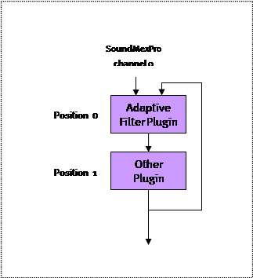

for sound applications in MATLAB®,
GNU Octave and Python
Version 2.8.0.0
ASIO Sound-Toolkit for MATLAB®, GNU Octave and Python
http://www.soundmexpro.de
User Manual
Copyright Hörzentrum Oldenburg gGmbH, Marie-Curie-Str. 2,
D-26129 Oldenburg, Germany
http://www.hz-ol.de
No warranty, subject to alteration
License agreement
IMPORTANT- PLEASE READ CAREFULLY:
BY INSTALLING THE SOFTWARE (AS DEFINED BELOW), COPYING THE SOFTWARE AND/OR CLICKING ON THE "ACCEPT" BUTTON BELOW, YOU (EITHER ON BEHALF OF YOURSELF AS AN INDIVIDUAL OR ON BEHALF OF AN ENTITY AS ITS AUTHORIZED REPRESENTATIVE) AGREE TO ALL OF THE TERMS OF THIS END USER LICENSE AGREEMENT ("AGREEMENT") REGARDING YOUR USE OF THE SOFTWARE. IF YOU DO NOT AGREE WITH ALL OF THE TERMS OF THIS AGREEMENT, DO NOT INSTALL AND/OR USE THE SOFTWARE.
DEFINITIONS
The term "Software" includes all software distributed with this License including all documentation. The "Software" is licensed to you under the terms specified in the License Grant below.
HIGH RISK ACTIVITIES
The Software is not fault-tolerant and is not designed, manufactured or intended for use as on-line control equipment in hazardous environments requiring fail-safe performance, such as in the operation of nuclear facilities, aircraft navigation or communication systems, air traffic control, direct life support machines or other medical devices, or weapons systems, in which the failure of the Software could lead directly to death, personal injury, or severe physical or environmental damage ("High Risk Activities"). Hörzentrum Oldenburg gGmbH and its suppliers specifically disclaim any express or implied warranty of fitness for High Risk Activities.
OWNERSHIP AND COPYRIGHT
This Software is owned by Hörzentrum Oldenburg gGmbH or its suppliers and is protected by copyright law and international copyright treaty. Therefore you must treat this Software like any other copyrighted material. You acknowledge that no title to the intellectual property in the Software is transferred to you. Title, ownership, rights, and intellectual property rights in and to the Software shall remain in Hörzentrum Oldenburg gGmbH.
LICENSE GRANT
Subject to the license terms, Hörzentrum Oldenburg gGmbH hereby grants you a non-exclusive, non-transferable (except under the terms below) license to install and to use the Software under the terms of this license. Except as provided in this license agreement, you may not transfer, rent, lease, lend, copy, modify, translate, sublicense, time-share or electronically transmit the Software. You may only either make one copy of the Software solely for backup or archival purposes or transfer the Software to a single hard disk provided you keep the original solely for backup or archival purposes. You agree not to modify the Software or attempt to decipher, de-compile, disassemble or reverse engineer the Software, except to the extent applicable laws specifically prohibit such restriction.
LICENSE TRANSFER
You may transfer your license and the rights granted in the license to a third party only if a) the third party agrees to this license agreement, b) you completely uninstall and delete all copies of this Software, c) all parts of the Software and its distribution are transferred to the third party and d) the transfer includes the current version and all prior versions of the Software.
DISCLAIMER OF WARRANTY
THIS SOFTWARE IS SOLD "AS IS" AND WITHOUT WARRANTIES AS TO PERFORMANCE OF MERCHANTABILITY OR ANY OTHER WARRANTIES WHETHER EXPRESSED, IMPLIED, OR STATUTORY, INCLUDING, BUT WITHOUT LIMITATION, THE IMPLIED WARRANTIES OF NONINFRINGEMENT OF THIRD PARTY RIGHTS, MERCHANTABILITY, AND FITNESS FOR A PARTICULAR PURPOSE. GOOD DATA PROCESSING PROCEDURE DICTATES THAT ANY PROGRAM BE THOROUGHLY TESTED WITH NON-CRITICAL DATA BEFORE RELYING ON IT. THE USER MUST ASSUME THE ENTIRE RISK OF USING THE PROGRAM. ANY LIABILITY OF THE SELLER WILL BE LIMITED EXCLUSIVELY TO PRODUCT REPLACEMENT OR REFUND OF PURCHASE PRICE. Under and restricted by the above terms, Hörzentrum Oldenburg gGmbH warrants that the Software, as updated and when properly used, will perform substantially in accordance with its accompanying documentation, and the Software media will be free from defects in materials and workmanship. The limited warranty is void if the Software fails as a result of accident, abuse, misapplication or modification. LIMITATION OF LIABILITY You must assume the entire risk of using the Software. IN NO EVENT SHALL Hörzentrum Oldenburg gGmbH BE LIABLE TO YOU FOR ANY DAMAGES, INCLUDING ANY LOST PROFITS, LOST SAVINGS, OR OTHER INCIDENTAL, INDIRECT OR CONSEQUENTIAL DAMAGES OF ANY KIND ARISING OUT OF THE USE OF THE Hörzentrum Oldenburg gGmbH's SOFTWARE, EVEN IF Hörzentrum Oldenburg gGmbH HAS BEEN ADVISED OF THE POSSIBILITY OF SUCH DAMAGES. IN NO EVENT WILL Hörzentrum Oldenburg gGmbH's LIABILITY FOR ANY CLAIM, WHETHER IN CONTRACT, TORT, OR ANY OTHER THEORY OF LIABILITY, EXCEED THE LICENSE FEE PAID BY YOU. THIS LIMITATION SHALL APPLY TO CLAIMS OF PERSONAL INJURY TO THE EXTENT PERMITTED BY LAW.
LIBSNDFILE LICENSE
SoundMexPro uses the libsndfile library written by Erik de Castro Lopo and others (http://www.mega-nerd.com/libsndfile/). It is published under the GNU Lesser General Public License (LGPL) either version 2.1 or optionally version 3 (see files libsndfile_lgpl_v2_1.txt and libsndfile_lgpl_v3.txt shipped with SoundMexPro).
1.1 What’s new in version 2.0?
2.2.1 Accessing SoundMexPro help from MATLAB®
3.1 General Command Description (MATLAB/Octave)
3.2 General Command Description (Python)
3.3 Architecture: Output Channels and Virtual Tracks
3.4 Audio data in SoundMexPro: files and vectors/arrays
3.4.1 Loops, ramps and crossfades
3.5.1 Sound card constraints: minimum delay
3.6 Supported audio file formats
4 Error Handling in SoundMexPro
4.1 Synchronous errors in SoundMexPro
4.2 Asynchronous errors in SoundMexPro
5 Tutorial, Examples and Scenarios
5.3 Using SoundMexPro without MATLAB®, GNU Octave or Python
5.3.1 Using the SoundDllProLoader
5.3.2 Programming Interface (API)
6.2 The SoundMexPro ‘TrackView’
7 SoundMexPro Realtime DSP-Plugins
7.1 Realtime processing with MATLAB® or GNU Octave scripts
7.1.1 Using compiled script plugins
7.2 Realtime processing with VST-plugins
7.2.1 I/O-configuration of VST-plugins
7.2.2 VST-plugin configuration files
8 ASIO Direct Monitoring (ADM)
8.1 Extensions/hints for particular sound cards
8.1.1 Mapping inputs to multiple outputs
10 File-to-file operation with SoundMexPro
12 SoundMexPro Command Reference
12.5 MATLAB® script DSP commands
1 Introduction
SoundMexPro is a powerful tool for sound applications in MATLAB®, GNU Octave and Python. SoundMexPro is especially designed for acoustic measurement tasks (Psychoacoustics, Physical Acoustics, Neuro Physiology).
|
|
SoundMexPro uses the ASIO technology. ASIO is a trademark and software of Steinberg Media Technologies GmbH. |
|
SoundMexPro uses the VST technology. VST is a trademark and software of Steinberg Media Technologies GmbH. |
|
|
SoundMexPro uses libsndfile 1.0.19 for reading sound files (see also license section above). See http://www.mega-nerd.com/libsndfile/ for more information. |
The software SoundMexPro is not a medical device or an accessory of a medical device, respectively, and not intended to drive a medical device.
The main features of SoundMexPro are:
- Multichannel sound output and recording using the ASIO sound interface (sample-accurate synchronization of multiple playback and recording devices).
- Reading multiple audio file formats
- Unlimited number of virtual audio tracks (virtual recording/mixing studio).
- Real-time mixdown of virtual tracks to output channels with separate level control for tracks and channels.
- Record from multiple devices synchronously to disk (hard disk recording).
- Continuous sound ‘adding’ mode: new audio data can be added at any time while device is already playing (e.g. for online stimulus generation).
- Retrieve recorded data directly to MATLAB® while device is recording (e.g. for online evaluation).
- Threshold driven recording.
- DSP-Plugins for real-time signal processing
o
Script based plugins: user defined MATLAB®
commands are called for every sound buffer on the fly. Processed data are sent
to the soundcard.
NOTE: script based plugins are not supported with Python
o VST-Host for loading Steinberg “Virtual Studio Technology“ (VST) effect plugins.
- Direct low latency I/O: recorded data can be directly (or after processing the data with DSP-Plugins) mapped to multiple tracks.
- file-to-file processing
- Xrun (dropout) detection.
- Special command for ‘highlighting’ buttons on a MATLAB® window: buffer accurate highlighting at desired playback ‘positions’ for signal-synchronous user feedback (not supported with Python)
Important note: For understanding the basic concept of SoundMexPro it is very important to get familiar with (and distinguish between) ‘Virtual Tracks’ and ‘Device Channels’. Please read chapter 3.3 very carefully where these terms are introduced.
A demo version of SoundMexPro is available for free. The demo version has the following restrictions:
- a demo message is shown on ‘init’ and after every few minutes
- sound input and output is stopped every few minutes
- additional sound (the spoken words ‘SoundMex demo’) is added to all playbacks and recordings at random times
1.1 What’s new in version 2.0?
With version 2.0 SoundMexPro introduced many new features and a few changes. You can find the complete version history of SoundMexPro on the SoundMexPro homepage at
http://www.soundmexpro.de/download/history.txt
New commands:
- channelname, trackname, recname: symbolic names can be set for tracks, output and input channels and these names can be used in all commands for the parameters ‘track’, ‘output‘ and ‘input respectively besides their indices
- recvolume: sets recording gain
- tracklen: returns total length of loaded data in tracks
- cleartrack: clears data in particular tracks
New features for loading sound data (file or vector):
- object gains: each loaded object can get it’s own gain
- crossfading between loaded sound objects
- object ramps: each loaded object can have own volume ramps
- loop ramps: each loaded object can have own volume ramps for each loop
- loop-crossfade: each loaded object can do a crossfade when looping
Other new features:
- VST plugins for recording channels
- Support for compiled MATLAB® script DSP plugins
- Most commands now allowed while sound output is already running
New GUI features:
- Update of wavedata in trackview while running allowed
- Ctrl + left mouse button sets playback position in trackview
- Mixer now has a variable width
Changes in default behaviour:
- Default value for parameter ‘autocleardata’ in command ‘init’ is now 0
- Default value for parameter ‘wavedata in commands ‘showtracks’ and ‘updatetracks’ is now 1
- Default GUI (command ‘show’) was removed. Command ‘show’ now is identical to ‘showmixer’
2 Installation
2.1 System Requirements
SoundMexPro runs on MATLAB® 5.3 (R11.1) and above, GNU Octave 3.8 and above or Python 3 on Microsoft Windows® 95 and above (32-bit and 64-bit).
For Python 3 the ‘numpy’ package is required. The tutorials and examples are using more packages (e.g. ‘soundfile’) that have to be installed when running the examples.
There are no special requirements on the computer. However, the more power your computer has, the more tracks, devices and DSP-plugins can be handled simultaneously without dropouts.
SoundMexPro runs with every sound card that is shipped with an ASIO driver. However, Hörzentrum Oldenburg cannot guarantee the support of all features with all sound cards.
If you want to use a soundcard that is not shipped with an ASIO driver you may use a universal ASIO driver for WDM (e.g. ASIO4ALL, see http://www.asio4all.com/ or Jack with JackRouter, see http://jackaudio.org/).
If you cannot use one of these universal drivers for any reason you may use the ‘wdm’ mode of SoundMexPro supporting two output channels only (no inputs supported, see commands ‘setdrivermodel’ and ‘getdrivermodel’).
For recommendations on sound cards please contact Hörzentrum Oldenburg by email, fax or phone.
2.2 Installing SoundMexPro
Run the downloaded installer and follow the installation instructions. The following files will be installed on your computer:
|
Directory |
File(s) |
Description |
|
bin |
libsndfile-1.dll, SMPIPC.EXE,
smp_stft.m,
SMPPlugin.m
soundmexpro_showdevs.m soundmexpro_showcfg.m soundmexpro_trackmap.m
smp_disp.m
borlndmm.dll, cc32250mt.dll, rtl250.bpl, rtl250.de Tee925.bpl, TeeUI925.de vcl250.bpl, vcl250.de vclimg250.bpl, vclimg250.de vclx250.bpl, vclx250.de |
Main program files and libraries + license file. Add this path to the search path of MATLAB®, GNU Octave or Python.
Tools used for spectral script based plugins
Tool script to be used for compiling script plugins Tool scripts for examination of available hardware and configuration, see tutorial t_02b_config_tools.m and commented scripts themselves. Helper script used in tutorials and examples. Runtime libraries. If you ship a compiled application using SoundMexPro you must ship these runtimes as well!
|
|
bin\Octave\??? |
mpluginmex.mex |
binaries needed for different versions of Octave. The subdirectory name corresponds to the Octave version, below you can find 32bit and/or 64bit versions in the corresponding directories. Copy these files to the BIN directory. As default the binaries for the latest supported version are located in the BIN directory after installation |
|
tutorial |
Various |
tutorial MATLAB® / GNU Octave script files |
|
tutorialpy |
Various |
Tutorial for Python |
|
examples |
Various |
advanced examples and examples using the VST plugins shipped with SoundMexPro and a MIDI example |
|
manual |
SoundMexPro.pdf SoundDllProLoader.pdf HtVst-Plugins.pdf lgpl.txt |
PDF Help, LGPL license information |
|
manual/html |
SoundMexPro.html + related files |
HTML help. Copy HTML and subfolder ‘SoundMexPro-Files’ to your MATLAB® ref path (see below) |
|
plugins |
*.dll |
VST plugins shipped with SoundMexPro |
|
waves |
various |
wave files used by the tutorial and the examples |
After installing you should add the BIN directory of your SoundMexPro installation (e.g. C:\SoundMexPro\bin) to your MATLAB® / GNU Octave / Python path.
NOTE: if you want to use SoundMexPro on MATLAB® 7.1 or below you have to rename the files bin/soundmexpro.old.dll to bin/soundmexpro.dll and bin/mpluginmex.old.dll to bin/mpluginmex.dll
NOTE: Do not play files from or record files to network drives!
2.2.1 Accessing SoundMexPro help from MATLAB®
If the BIN directory is part of the MATLAB® search path you can access the HTML-help of SoundMexPro from the MATLAB® help browser (MATLAB® version >= 7.0). Call the ‘doc’ command and select ‘SoundMexPro’ from the content pane. Note that you need to restart MATLAB® after adding the BIN directory to the search path before SoundMexPro will be listed on the content pane!
To call the HTML-help of SoundMexPro directly from MATLAB® please use the ‘web’ command rather than ‘doc SoundMexPro’ (this not supported by all MATLAB® versions):
web('c:\soundmexpro\manual\html\soundmexpro.html');
or
web('soundmexpro.html', '-helpbrowser');
NOTE: the second syntax only works, if you have added the Manual\HTML path of SoundMexPro to the MATLAB® search path.
If you want to access the HTML-help through the MATLAB® command 'doc SoundMexPro' on MATLAB® versions older than 7.0 please copy the content of the subfolder 'Manual\HTML' from your SoundMexPro-Installation to the directory
<MATLAB path>\help\techdoc\ref (e.g C:\MATLAB6p5\help\techdoc\ref) 2.3 Licensing SoundMexPro
SoundMexPro can be licensed using a dongle or using an online license. Without a valid license SoundMexPro runs in demo mode (restrictions see chapter 1).
2.3.1 Dongle License
If you are running SoundMexPro with a dongle license, the license can be transferred between different computers by transferring the dongle.
2.3.2 Online License
On purchase you can chose to use an online license instead of the dongle.
Important note: currently an internet connection will be mandatory on each start of SoundMexPro when you are using an online license!
An online license can be activated in the “About” dialog of SoundMexPro. It is displayed automatically when calling soundmexpro(‘init’) without a valid license. After clicking the button ‘Online license’ on the about box an additional dialog is displayed:
Figure 1: Online licenses
Please enter/paste the product key you have received into the corresponding field and click ‘Activate’. After successful activation a Host ID is displayed in the second field and the ‘Activate’-button shows the caption ‘Deactivate’.
If you want to use the same license on a different computer you may deactivate the license again by clicking the ‘Deactivate’-button. This way you can transfer online licenses between computers.
If you encounter any problem with the online licenses please always include the product key and Host ID (if any) in your support request (the button ‘Clipboard’ will copy both values to the clipboard).
2.4 Uninstalling SoundMexPro
An uninstaller is shipped with SoundMexPro. Run the uninstaller from the control panel.
3 The SoundMexPro Interface
This chapter describes the general command interface and architecture of SoundMexPro. All SoundMexPro commands are listed and described in the command reference in chapter 12.
The command interface for MATLAB/Octave and Python are very similar, however some important differences apply. The following subparagraphs describe the two interfaces. In later examples within this document the examples are shown in both variants, where
gray boxes show MATLAB/Octave syntax
blue boxes show Python syntax
The paragraph after the “General Command Description” contains a description of the internal SoundMexPro architecture using ‘output channels’ and ‘virtual tracks’. Read this carefully, because it is very important to get the idea of this concept to be able to tap the full potential of SoundMexPro.
SoundMexPro is shipped with a tutorial and
some advanced examples. It is highly recommended to examine the tutorial
thoroughly. It is located in the ‘tutorial’ or ‘tutorialpy
subdirectory respectively of the SoundMexPro installation. The files named
‘t_???’ are part of the tutorial (the others are helper scripts). The file
names are chosen (if sorted alphabetical) to give the tutorial a logical order
with an ascending level of complexity using more and more commands of
SoundMexPro starting with ‘t_01_basics’.
In the ‘examples’ subdirectory you may find some advanced examples that might be useful such as a pair comparison script with cross fade, SNR adjustment ‘on-the-fly’ and some VST examples.
The tutorial and the examples are described in detail in chapter 5.
3.1 General Command Description (MATLAB/Octave)
All SoundMexPro commands have a similar syntax:
[errocode, outarg1,…] = soundmexpro('command', par1, val1, par2, val2,…);
All command arguments (except for command ‘help’) have to be specified in pairs of ‘parameter name’ and ‘value’, e.g.
soundmexpro('loadfile', ... % command name
'filename', 'noise_16bit.wav', ... % name of wavefile
'track', [0 1], ... % tracks, where to play file
'loopcount', 1 ... % play it 1 time
);
Most of the parameters have default values and thus can be omitted, some are mandatory (see help on commands below).
Note: all indices in SoundMexPro are zero-based, i.e. the first output, track or input respectively has index 0, second has index 1 and so on.
However, you can assign symbolic names to all outputs, tracks and inputs using the commands ‘channelname’, ‘trackname’ and ‘recname’. Afterwards you can use these names in all commands optionally instead of their indices.
All commands return one output argument at least. This return value is an error code and indicates success or failure of the command itself, where 1 is returned on success and 0 on any error. Evaluate this first return value to react on any error before calling further SoundMexPro commands, e.g.:
success = soundmexpro('init');
if (~success)
error('Cannot initialize SoundMexPro!');
end
Commands with additional return values write these to outarg[1] … outarg[n], e.g.:
[success, lasterror] = soundmexpro('getlasterror');
if success ~= 1
error('error calling getlasterror');
end
disp(['the last error was ' lasterror]);
Important notes:
- If any error occurs within a command, the additional output arguments may contain only a scalar value (zero) and must not be used. In this case only the error code is valid!!
- All string values are returned as cell arrays!
- The standard error code return argument is omitted in the list of outargs in the ‘help’ command and in the command tables below. All commands return the error code as first outarg!
3.2 General Command Description (Python)
The interface to the SoundMexPro libraries is implemented in ‘soundmexpro.py’ in the BIN subdirectory of your SoundMexPro installation. You may check/change the file for your needs.
The path to this script and the binaries has to be added e.g. using sys.path.append.
All SoundMexPro commands have a similar syntax:
retvals = soundmexpro('command', args)
The arguments passed to a command in ‘args’ and the return values ‘retvals’ are dictionaries.
In this example the dictionary is created beforehand:
args = {'filename' : 'noise_16bit.wav', # name of wavefile
'track' : [0, 1], # tracks, where to play file
'loopcount' : 1 # play it 1 time
}
soundmexpro('loadfile', args)
Most of the parameters have default values and thus can be omitted, some are mandatory (see help on commands below).
Note: all indices in SoundMexPro are zero-based, i.e. the first output, track or input respectively has index 0, second has index 1 and so on.
However, you can assign symbolic names to all outputs, tracks and inputs using the commands ‘channelname’, ‘trackname’ and ‘recname’. Afterwards you can use these names in all commands optionally instead of their indices.
All commands return one dictionary entry ‘success’. However, if the value of this value is not 1, (which indicates success) then the script soundmexpro.py raises an exception. If you want to change this behaviour please edit the corresponding part in soundmexpro.py (see the comments in the file as well). You may introduce (own) error handling by catching the corresponding exception. In this example the dictionary with arguments is created ‘inline’:
try:
soundmexpro('init', {'driver' : 'MyDriver'})
except:
print('cannot initialize SoundMexPro')
Commands with additional return values write these the retvals dictionary and can be rad from it after the function call, e.g.
retvals = soundmexpro('getlasterror')
print('the last error was {}'.format(retvals['error']))
3.3 Architecture: Output Channels and Virtual Tracks
The descriptions in this chapter reference to some SoundMexPro commands, that will be described later, but they should give you an idea here, which commands are important for understanding the basic concept of SoundMexPro.
The basic idea of SoundMexPro is based on the discrimination between output channels (hardware, called ‘output channels’ below) and virtual audio data tracks (software, called ‘tracks’), where audio data can be loaded to. Each track can be connected (‘wired’) to an output channel and - like in a mixing desk - multiple tracks can be connected to the same output channel: these tracks (i.e. the audio data of these tracks) are mixed on the fly to the output channels. Each output channel of SoundMexPro (containing a ‘mixdown’ of multiple tracks) can be connected to one channel of the sound card (called ‘device channel’ below).
The figure below shows an example using three output channels connected to three corresponding device channels, and six virtual tracks are used.
Figure 2: Output channels and virtual tracks
The command sequence for setting up SoundMexPro for the configuration shown above is described here in detail (in anticipation of the command list below, most arguments omitted to use default values):
% initialize SoundMexPro with three output channels and six track
soundmexpro('init', ... % command name
'output', [0 5 6], ... % use three output channels, connected to
... % device channels 0, 5 and 6 of the sound card
'track', 6 ... % use 6 tracks
);
# initialize SoundMexPro with three output channels and six track
soundmexpro('init', # command name
{
'output' : [0, 5, 6], # use three output channels, connected to
# device channels 0, 5 and 6 of the sound card
'track' : 6 # use 6 tracks
}
)
Note: after initialization the three ‘allocated’ output channels are enumerated in SoundMexPro starting with 0, i.e. first sound card device channel (0) will have output channel index 0 in SoundMexPro, sixth sound card device channel will have output channel index 1 and seventh sound card device channel will have output channel index 2 .
The default track mapping (wiring of tracks to output channels) after command ‘init’ (if ‘track’ parameter is omitted) is “one track per output channel”, where the first track is connected to the first output channel, second track to second output channel, and so on. In this example six tracks and three output channels were specified: the tracks are mapped ‘circular’ to the available output channels. ‘Circular’ here means that a track with number TrackIndex is mapped to output channel number ChannelIndex calculated by
ChannelIndex = mod(TrackIndex, TotalNumberOfOutputChannels);
In this example the tracks 0 and 3 are connected to output channel 0, tracks 1 and 4 are connected to output channel 1 and tracks 2 and 5 are connected to output channel 2 (default mapping after ‘init’). Note: this mapping does not yet fit our ‘requirements’ for the example!
This default mapping can be changed with the command ‘trackmap’ to match the example from the requirements:
% map (route) first two tracks to channel 0, next three tracks to channel 1 and
% sixth track to channel 2
soundmexpro('trackmap', ... % command name
'track', [0 0 1 1 1 2] ... % track map to set
);
# map (route) first two tracks to channel 0, next three tracks to channel 1 and
# sixth track to channel 2
soundmexpro('trackmap', # command name
{
'track' : [0, 0, 1, 1, 1, 2] # track map to set
}
)
Now the ‘wiring’ is complete and matches exactly the configuration shown in Figure 2. The volume (linear gain) of each track can be adjusted with the command ‘trackvolume’, the final ‘master volume’ of an output channel additionally can be adjusted using the command ‘volume’.
The next step is to load audio data (files or MATLAB® vectors) to the tracks (green boxes in Figure 2) using the ‘loadfile’ or ‘loadmem’ command respectively. The different number of ‘data boxes’ in the tracks indicate that all tracks may be filled with different data independently, files and vectors may be mixed.
The command ‘start’ starts the signal output. In the example the output will start with a sum of ‘file 1’, and ‘vector 2’ on sound card channel 0, a sum of and ‘file 4’, ‘file 5 ‘ and ‘file 7’ on sound card channel 5 and with ‘vector 5’ on sound card channel 6. The output proceeds as if a ‘virtual playback cursor’ shown as dotted line in Figure 2 would run parallel through all tracks. However, this picture does not fit exactly, if loops are used for particular audio data. But the picture is correct again, if you imaginary ‘copy’ the audio data to be looped n times into the corresponding track.
The example above shows the general ‘strategy’ to find the appropriate configuration of SoundMexPro for a particular task:
- Determine how many independent channels (i.e. soundcard outputs/speakers) you need. Specify this number of channels in argument ‘output’ (with respect to the ‘real’ hardware channels of your sound card you want to use),
- Determine the total number of independent tracks (i.e. sound data you need at the same time - in parallel). Specify this number of tracks in the ‘track’ argument of command ‘init’. If you don’t need any mixing, then omit the ‘track’ argument: one track for each channel will be created (with a ‘straight’ connection from track 0 to channel 0, track 1 to channel 1 and so on).
- Determine the required ‘wiring’ of tracks to output channels, i.e. which track(s) are connected to which output channels and set this ‘mapping’ using the ‘trackmap’ command.
For simplicity reasons the example above describing the difference between ‘tracks’ and ‘output channels’ only used simple signal output without any DSP plugins and/or signal input (recording). The complete ‘processing scheme’ for each output channel, i.e. how samples are generated and processed before they are sent to the sound card driver consists of the following steps (see Figure 3, the numbers at the bottom correspond to the enumeration below):
- Track data are retrieved (from file or vector / array)
- Data from input channels (recording channels) that are ‘mapped’ to one or more tracks with command ‘iostatus’ are added to the corresponding track(s) after the recording volume (command ‘recvolume’) and the recording VST plugins were applied. Multiple input channels may be mapped to the same track (dashed line) or one input channel may be mapped to multiple tracks as well (dotted line).
- Track volumes are applied.
- The completely calculated track data are passed to the track VST plugins for processing. NOTE: depending on your VST plugin configuration data across tracks may be mixed (see chapter 7.2).
- Generate output data from track data: iteration through all virtual tracks (containing the data processed so far) with ascending indices. The track data are ‘applied’ to ‘their’ output channel, where ‘applied’ means
- they are added to the output (default)
- the current output is multiplied sample by sample with the data, if the track is in multiplying mode (see command ‘trackmode’). In this case the ‘order’ of the tracks is important: if you have e.g. initialized 4 tracks for an output channel and have set the third track to multiplying mode, then the sum of the first two tracks is multiplied with the third track, and the fourth track is added to the result of that operation!
- The completely calculated output channel data are passed to the master VST plugins of the output channel for processing. NOTE: depending on your VST plugin configuration data across output channels may be mixed (see chapter 7.2).
- The completely calculated input and output channels are passed to the MATLAB® script DSP interface of SoundMexPro. Important note: the input channels passed to the MATLAB® script DSP interface are the recorded data received from the driver and processed by the optional recording VST plugins (dash-dotted line). Within the interface you can mix/add/copy data between the inputs and outputs. This means that there are two ways of mixing inputs to the outputs: either using command ‘iostatus’ (see step 2 above) or within the MATLAB® script DSP interface of SoundMexPro.
- Afterwards the processed data are passed to the final VST plugins of the output channel for processing. NOTE: depending on your VST plugin configuration data across output channels may be mixed (see chapter 7.2).
- Finally the channel volume (see command ‘volume’) is applied.
Figure 3: Output processing scheme for one soundcard output channel
NOTE: after all these calculations the data are passed to the driver. If the data contain values above 1 or below -1 clipping will occur. So you have to take care (especially when using multiple tracks), that the sum of your data does not exceed these limits!
The light blue boxes labelled ‘Harddisk Recording’ and ‘debugsave’ show how data are saved to disk in SoundMexPro:
- By default recording data (command ‘recfilename’) are written WITHOUT applying signal processing except for ‘recvolume’, see “Harddisk recording A” in the figure.
- If you want to record data that are processed by VST recording plugins and by the MATLAB® script DSP interface (“Harddisk recording B” in the figure) then you have to specify the option “recprocesseddata” with value “1” on “init”!
- Data saved with command ‘debugsave’ store the completely processed data of an output channel.
It is always recommended to record unprocessed data to disk and apply any signal processing later. In this way you can always fall back to the original data later again, otherwise you only will have the processed data available.
In general you can use an unlimited number of virtual tracks and connect an unlimited number of tracks to each output channel, however, it depends on the performance of your computer (and number of used plugins - and their individual computing time) how many tracks you can use without dropouts (xruns).
3.4 Audio data in SoundMexPro: files and vectors/arrays
SoundMexPro supports loading of audio data in two different ways:
- Command ‘loadmem’: with this command audio data can be loaded directly from vectors/arrays to SoundMexPro. The data have to be aligned as one column per audio channel and have to be scaled between -1 and 1. When loading vectors the data are copied within SoundMexPro. Otherwise every change to a vector/array during playback would crash the application. But this means, that all audio data are resident in memory twice! Thus – whenever feasible – the ‘loadfile’ should be preferred.
- Command ‘loadfile’: using this command SoundMexPro reads audio data ‘on-the-fly’, i.e. it does not load the complete file to memory but performs a buffered read during playback. Therefore this method consumes less memory than ‘loadmem’. However: since the data are read during playback it is highly recommended not to load files from network drives!
The commands ‘loadfile’ and ‘loadmem’ have a huge number of optional parameters including gain, loops, ramps, crossfades, building snippets. Please read the command reference in chapter 12 for a full description and check the corresponding tutorial scripts.
The following subsections describe a few special features in more detail. These details apply for audio files and vectors/arrays, thus the term ‘audio objects’ is used in the following for both types of audio data.
3.4.1 Loops, ramps and crossfades
SoundMexPro supports different types of ramps (amplitude/gain envelopes) when loading audio objects:
Parameter ‘ramplen’: length of ramp to be applied in the beginning and at the end of the complete object after applying all loops, offsets ...
Parameter ‘loopramplen’: length of ramp to be applied in the beginning and at the end of each loop
The figure below shows an example of a gain ramp for an object that was loaded with a loopcount of 3. The dashed lines mark the beginning of a new loop. A startoffset > 0 was specified (the first loop is shorter). A ramplen of x samples and a loopramplen of y samples were specified.
Figure 4: object ramps
Additionally SoundMexPro supports two types of crossfades:
Parameter ‘crossfadelen’: Crossfades between different audio objects: the last samples of an audio object are ramped down and added to the first samples of the following audio object ramped up. The desired crossfade length has to be specified when loading the second of the two audio objects to be crossfaded. The figure below shows an example, where two audio objects where loaded, the second with a crossfadelen of x samples. For better illustration of the overlap the two objects are shown stacked, the final output is the sum of both:
Figure 5: crossfade between different audio objects
NOTE: the total playback length will be shorter than the sum of the total lengths of the two objects by x.
Parameter ‘loopcrossfade’: Crossfades between loops within an audio object. If loopcrossfade is set to ‘1’ then the value of parameter ‘loopramplen’ is used for this ‘object-internal’ crossfade. In the example shown below an object was loaded with a loopcount of 3, a loopramplen of x samples and loopcrossfade 1. For better illustration of the overlap the three loops are shown stacked, the final output is the sum of all three.
Figure 6: crossfade in looped audio objects
NOTE: the total playback length will be shorter than loopcount*objectlength by (loopcount-1)*x
3.4.2 Channel ‘alignment’
When using multichannel audio objects to SoundMexPro they are loaded with keeping their channels ‘aligned’. This means, that the channels are not shifted against each other, even if the tracks, where the channels are loaded to, already contain data with different lengths. This is illustrated with an example in Figure 7.
Figure 7: Channel alignment
The tracks 0 and 1 already contained data of different length (green boxes) when loading the stereo ‘file 4’ (blue boxes) with the command:
soundmexpro('loadfile', ... % command name
'filename', 'file4', ... % name of wavefile
'track', [0 1], ... % tracks, where to play file
'loopcount', 1 ... % play it 1 time
);
soundmexpro('loadfile', # command name
{'filename' : 'file4', # name of wavefile
'track' : [0, 1], # tracks, where to play file
'loopcount' : 1 # play it 1 time
}
)
In this case SoundMexPro automatically inserts zeros into track 1 (pink box) to keep the channels of ‘file 4’ aligned.
If you want to load the two channels of ‘file 4’ in such a scenario ‘unaligned’ you have to do two subsequent calls to command ‘loadfile’ to load the two channels separately:
% load first file channel to track 0 (second file channel neglected by specifying
% a negative value)
soundmexpro('loadfile', ... % command name
'filename', 'file4', ... % name of wavefile
'track', [0 -1], ... % tracks, where to play file.
'loopcount', 1 ... % play it 1 time
);
% load second file channel to track 1 (first file channel neglected by specifying
% a negative value)
soundmexpro('loadfile', ... % command name
'filename', 'file4', ... % name of wavefile
'track', [-1 1], ... % tracks, where to play file.
'loopcount', 1 ... % play it 1 time
);
# load first file channel to track 0 (second file channel neglected by specifying
# a negative value)
soundmexpro('loadfile', # command name
{'filename' : 'file4', # name of wavefile
'track' : [0, -1], # tracks, where to play file.
'loopcount' : 1 # play it 1 time
}
)
# load second file channel to track 1 (first file channel neglected by specifying
# a negative value)
soundmexpro('loadfile', # command name
{'filename' : 'file4', # name of wavefile
'track' : [-1, 1], # tracks, where to play file.
'loopcount' : 1 # play it 1 time
}
)
This leads to the following data status in the two tracks:
Figure 8: Channel alignment (not aligned)
3.5 Buffer configuration
When playing sound through a soundcard using the ASIO interface audio data are streamed to the soundcard driver, i.e. buffers with audio data are passed to the driver on request: the driver calls the sound application when it needs new audio data. If this call happens, the data are needed ‘immediately’ and if the operating system (or your MATLAB ® task) is very busy at the moment, then audible dropouts, so called xruns may occur.
First of all an application must be capable to provide audio data for the driver at a sufficient speed, i.e. on average the processing/generation of one audio data block must not take longer than the output of a block of same size. If the processing is too slow, then xruns are unavoidable (see example in tutorial t_07a_realtime_plugin), the processing scheme has to be optimized, or offline processing has to be done.
But xruns may occur sometimes even if the processing is fast enough: it may happen that the operating system (or your MATLAB ® script) produces heavy load temporarily exactly at the moment when audio data are requested by the driver. Then xruns will occur if no so called software buffering is done. Software buffering stores a particular number of processed (!) audio data blocks for passing them to the driver immediately. In this way some buffers are filled (pre-processed) when the processor load is not extremely high and on temporary heavy load there are always a few processed buffers available that only have to be passed to the driver.
SoundMexPro supports software buffering. The number of buffers to be used is specified in the parameter ‘numbufs’ in command ‘init’ (default is 10 buffers).
Software buffering will cause additional delay for the signal output. For applications, where only sound output or recording is done, this usually can be neglected, it does not interfere with standard playback/recording tasks (you may find a few additional buffers of zeros in recorded files).
But in applications where SoundMexPro is used as DSP-Engine, i.e. data from the inputs are processed and played back directly (command 'iostatus’), then a minimum delay may be desirable. The minimum theoretical delay a ASIO driver will be able to provide is
Dmin = 2 * ASIOBufferSize + HardwareSpecific + DriverSpecific
where
ASIOBufferSize: buffer size that can be selected in the driver manufacturers soundcard dialog (see command ‘controlpanel’).
HardwareSpecific: additional delay form hardware (e.g. anti-aliasing filters of D/A converter)
DriverSpecific: any delay caused by the particular implementation of the driver itself
The total delay in SoundMexPro will be
Dtot = Dmin + numbufs*ASIOBufferSize
Thus you can minimize the delay by decreasing the ASIO buffer size and/or decreasing the number of used software buffers. In both cases the risk for the occurrence of xruns will increase.
3.5.1 Sound card constraints: minimum delay
Theoretically the minimum I/O delay can be achieved by disabling software buffering (i.e. setting ‘numbufs’ to zero in command ‘init’). However, some sound card drivers are introducing two buffers with zeros in the beginning by mistake when no software buffering, but a separate processing thread is used (for ASIO insiders: the driver starts the output of its buffers immediately after the buffer switch returns instead of waiting for the ASIOOutputReady command). For these soundcards the minimum delay is
D = Dmin + ASIOBufferSize
This can be achieved by setting ‘numbufs’ to 1 in command ‘init’.
To check, if your sound card is concerned by this problem you have to measure the delay and compare the delay when setting ‘numbufs’ to 1 and setting ‘numbufs’ to zero.
Most drivers of the sound cards from RME are affected by this problem.
3.6 Supported audio file formats
SoundMexPro uses the library libsndfile for reading audio files. It supports a huge number of audio formats (except for MP3). Amongst others the following formats are supported
- Microsoft WAV
- Ogg Vorbis
- Sun/DEC/NeXT AU/SND
- Commodore/Amiga IFF
- Creative VOC
- SoundForge W64
- GNU Octave 2.0/2.1 MAT4/MAT5
-
FLAC
For a complete list of supported formats please refer to the libsndfile homepage (http://www.mega-nerd.com/libsndfile/).
Recorded data are always stored as normalized single channel 32bit PCM wave files (one file per channel).
4 Error Handling in SoundMexPro
When trying to generate clean and stable programming code with any programming or scripting language it is essential to take care of accurate error handling. SoundMexPro provides a variety of commands/tools to implement error handling for two types of errors that might occur.
4.1 Synchronous errors in SoundMexPro
Every SoundMexPro command returns an error code as first return value to MATLAB® to indicate the success or failure of a particular command. This may include simple syntax errors as well as failures accessing the soundcard. Evaluating these return values carefully allows the user to detect problems immediately when they occur and avoid unpredictable script crashes, if one SoundMexPro command ‘on-the-way’ fails.
4.2 Asynchronous errors in SoundMexPro
Errors that do not occur as immediate result of a call to a SoundMexPro command are called ‘asynchronous errors’. Such errors cannot be reported to MATLAB® immediately (i.e. at the time of their occurrence) because there is no SoundMexPro command currently running, that may ‘accept’ any return value. Therefore asynchronous errors are stored and the next SoundMexPro command will fail and show the corresponding error indicating it as an asynchronous error. Such errors may occur during the runtime of SoundMexPro due to various reasons:
4.2.1 Clipping
The input or output of the device clips (overdrive). SoundMexPro detects and counts buffers, where I/O clipping occurs. The current value can be retrieved at any time with the command ‘clipcount’ and the user may react on eventually detected clipping e.g. by stopping the complete script. NOTE: clipping on the input is defined in SoundMexPro as two subsequent samples with +1 or -1 within one buffer.
Clipping on the output is checked after applying signal processing and gains to detect clipping directly before D/A conversion.
Clipping on the input is checked before applying any signal processing or gain to detect any clipping after A/D conversion.
4.2.2 Xruns
Dropouts occur in the input or output (so called ‘xruns’). SoundMexPro tries to detect xruns caused e.g. by too slow DSP processing within the plugin pipe. However, if the total processor load is very heavy SoundMexPro may not detect xruns. They can only be detected, if there is enough processing time left to let the soundcard itself send a request for new data! The current value can be retrieved at any time with the command ‘xrun and the user may react on eventually detected xruns e.g. by stopping the complete script.
Additionally SoundMexPro distinguishes two types of XRuns
‘Processing queue xruns’: these are dropouts in playback or recording due to slow DSP processing resulting in audible dropouts (or dropouts in recorded data).
‘Visualization and hard disk recording dropouts’: these dropouts occur, if your hard disk is too slow for writing all data to disk or your computer is too slow to do the visualization of the data (if shown at all). These xruns result in dropouts in your recording, but not in the processing. Both tasks are performed in different threads where the processing thread has the higher priority.
The command ‘xrun’ returns the sum of both types (for backwards compatibility), the number of processing and the number of ‘recording’-xruns separately.
4.2.3 Data underrun
A data underrun occurs in the output. A data underrun occurs, if the sound output is started (command ‘start’) and a channel has played all his data before receiving new data with ‘loadfile’, or’ loadmem’. In most applications this underrun is not of interest (usually the channels should run out of data after playing the desired samples), but e.g. for continuous stimulus generation it might be necessary to detect underruns (i.e. if you are too slow in generating new samples). The command ‘underrun’ retrieves the current underrun status for all channels.
Take e look at the tutorial script ‘t_04c_play_con_stim_gen.m’
4.2.4 Setting changed
If the sample rate or buffer size of the driver is changed externally (e.g. from control panel of the driver) during signal output the device is stopped and the error message for command ‘asyncerror’ is set correspondingly.
4.2.5 Fatal errors
Fatal (unexpected) asynchronous errors during signal I/O occurs. Usually such errors should not occur (if no hardware error occurs) except if a plugin (script plugin or VST plugin) returns an error during signal processing. Please refer to the tutorial script ‘t_08_async_errors.m’ that shows how to detect such errors.
5 Tutorial, Examples and Scenarios
This chapter contains a description of the SoundMexPro tutorial, a (growing) collection of examples, ‘special’ scenarios and extended explanations to particular commands.
This chapter uses many of the SoundMexPro commands. Please refer to the command reference in chapter 12 for help on particular commands.
5.1 The SoundMexPro Tutorial
SoundMexPro is shipped with a tutorial. It is highly recommended to examine the tutorial thoroughly. It is located in the ‘tutorial’ or ‘tutorialpy’ subdirectory respectively of the SoundMexPro installation. The files named ‘t_???’ are part of the tutorial (the others are helper scripts). The file names are chosen (if sorted alphabetical) to give the tutorial a logical order with an ascending level of complexity using more and more commands of SoundMexPro.
NOTE: scripts containing ‘_x_’ in their name are used by the tutorials described in the table below and should not be called directly.
Filename |
Description |
|
t_00_setup_tutorial |
Helper script to select a sound card driver and sound card channels to be used for the tutorial and examples |
|
t_00b_init_tutorial |
Helper script that reads settings created with t_00_setup_tutorial in each tutorial file. |
|
t_01_basics |
This example shows very basic commands: initialization and track mapping, using the online help, retrieving version information and showing/hiding the ‘standard’ GUI. |
|
t_02_device_info |
Shows how to retrieve information about installed devices/sound cards and their available channels and properties. Additionally the usage of symbolic names for tracks is introduced. |
|
t_02b_config_tools |
Shows usage of the tool scripts soundmexpro_showdevs.m, soundmexpro_showcfg.m and soundmexpro_trackmap.m located in the BIN subdirectory of SoundMexPro. These scripts may be usefull to check available hardware or your current SoundMexPro configuration after 'init' and to 'generate' command parameters for 'init' or 'trackmap' respectively. Note: this tutorial and the tool scripts soundmexpro_showdevs, soundmexpro_showcfg and soundmexpro_trackmap are not available in Python |
|
t_03_error_handling |
Demonstrates standard and user defined error handling. |
|
t_04_play_loops_crossfades |
Shows special parameters to be used in commands ‘loadfile’ and ‘loadmem’ concerning looping and crossfading of sound objects. |
|
t_04a_playback_wait |
Playing files and vectors/arrays in different conditions: blocking, non-blocking, play parts/snippets. |
|
t_04b_play_mix_volume |
This example introduces the usage of multiple tracks for mixing audio data on the fly including volume adjustment (mixing ration). Additionally the usage of the mixer and the trackview GUI are shown. |
|
t_04c_play_con_stim_gen |
Demonstration of ‘online-stimulus-generation’: audio data are added to the output while the device is running ‘on-the-fly’ with respect to underruns. |
|
t_04d_play_mark_buttons |
Shows usage of the ‘highly specialized’ command ‘setbutton’ for highlighting buttons on a MATLAB® GUI synchronized with particular sample positions of the sound output. NOTE: this tutorial is not available for Python |
|
t_04e_play_mute_pause |
Muting, pausing and ‘soloing’ (mute all other channels) of channels and tracks. |
|
t_04f_play_startthreshold |
Start device threshold driven (signal on input) |
|
t_05a_rec_standard |
Introduces recording to file. |
|
t_05b_rec_threshold_length |
Shows how to trigger recording by a threshold value (recording starts after threshold is exceeded in input audio data) and recording of predefined number of samples. |
|
t_05c_rec_getlivedata |
Demonstrates how to get recorded data snippets ‘live’ to MATLAB® vectors e.g. for online-analysis. |
|
t_06_direct_io |
Shows how to do direct I/O through SoundMexPro. Maybe combined with later ‘plugin’-tutorials to do realtime DSP. |
|
t_07a_realtime_plugin |
Introduces the realtime MATLAB® script plugins in the time domain. Easy example, where audio data are processed block by block in realtime during output. NOTE: this tutorial is not available for Python |
|
t_07b_realtime_plugin_spec |
Introduces the realtime MATLAB® script
plugins in the frequency domain. Uses the STFT scripts stftinit.m and stft.m
(BIN-directory) shipped with SoundMexPro. Simple implementation of one
function (t_07b_x_stft_userfcn.m) to process spectra block by block in
realtime during output. |
|
t_08_async_errors |
Example for occurrence and handling of asynchronous errors. |
|
t_09a_vst_simple |
Simple example using a VST plugin as described in chapter 7.2.1 |
|
t_09b_vst_artificial |
Sophisticated ‘artificial’ plugin example using fantasy data and a gain plugin to demonstrate, how data are mapped/routed through the VST-Host of SoundMexPro. |
|
t_09c_vst_gain |
Simple plugin example using a VST plugin to change the output gain on the fly. |
|
t_09d_vst_recursion |
Example for the demonstration of recurse wiring within VST plugins. |
|
t_10_adm |
Basic example for the usage of “ASIO direct monitoring” (adm). |
|
t_11a_file2file |
Tutorial for file-to-file operation |
5.2 The SoundMexPro Examples
Some advanced examples implementing common ‘tasks’ are located in subdirectories in the ‘examples’ or ‘examplespy’ subdirectory respectively of SoundMexPro:
|
Directory name / filename |
Description |
|
01 Adjustable SNR |
This example shows how to play a tone and a noise signal on the same hardware output channels using multiple tracks. A slider is used to adjust the SNR on the fly by adjusting the volume of the tone. |
|
02 Pair Comparison |
Two variants of a signal (one of them bandpass filtered) are loaded to different tracks. Button clicks do a cross fade between the two variants to do a smooth transition from one signal to the other. User may switch back and forth and select a ‘winner’ of the comparison. |
|
10 SineGenerator |
Sine generator that plays an online-generated sine signal. A slider is shown that allows realtime changing of the sine frequency. This example uses a MATLAB® script plugin in the time domain. NOTE: for Python this example uses a VST plugin instead |
|
11 Dynamic Bandpass |
Example showing how to implement an adjustable bandpass filter using a realtime MATLAB® script plugins in the frequency domain. The center frequency of the bandpass can be adjusted with a slider. NOTE: this tutorial is not available for Python |
|
12 BekesyTracking |
Bekesy-Tracking example using a MATLAB® script plugin. NOTE: for Python this example uses a VST plugin instead |
|
13 Threshold Driven Playback |
Playback driven by threshold detection on recording channel using a MATLAB® script plugin. NOTE: this tutorial is not available for Python |
|
20 VST Examples / vst_conv.m |
Shows usage of the fast convolution VST-plugin shipped with SoundMexPro. |
|
20 VST Examples / vst_equalizer.m |
Shows usage real and complex equalizer VST-plugin shipped with SoundMexPro. |
|
20 VST Examples / vst_hetero_dyning.m |
Shows usage of the hetero dyning VST-plugin shipped with SoundMexPro. |
|
20 VST Examples / vst_visualize.m |
Shows usage of the visualization VST-plugin shipped with SoundMexPro. |
|
50 Compiled Script Plugin Example |
‘How-to-example’ for creating and using compiled MATLAB® script plugins in compiled applications. NOTE: this tutorial is not available for Python |
|
51 SoundMexProLoader Example |
Example script for using the SoundDllProLoader (using SoundMexPro without MATLAB®, GNU Octave or Python) |
|
52 C++-API-Example |
Source code snippet in C++ demonstrating the SoundMexPro API (usage of the SoundDllPro.dll in your own code) See also the separate documentation SoundMexPro_Interface_Description.pdf |
5.3 Using SoundMexPro without MATLAB®, GNU Octave or Python
5.3.1 Using the SoundDllProLoader
A simple loader ‘SoundDllProLoader.exe’ is shipped with SoundMexPro. It is designed to load the DLL SoundDllPro.dll (including the main functions of SoundMexPro) for using it without MATLAB®, GNU Octave or Python. In this way it is possible to implement SoundMexPro-Tasks on computers that do not run MATLAB®, GNU Octave or Python.
The loader is described in detail in the separate manual SoundDllProLoader.pdf, an example can be found in the examples subdirectory.
5.3.2 Programming Interface (API)
A simple programming interface to the main SoundMexPro-DLL ‘SoundDllPro.dll’ is available to call SoundMexPro directly from your own code. Please refer to the separate manual ‘SoundMexPro_Interface_Description.pdf’ for details and check the corresponding example in examples subdirectory.
6 SoundMexPro GUI interfaces
6.1 The SoundMexPro ‘Mixer’
The commands ‘show’ and ‘showmixer’ show a mixer interface with volume, mute and solo controls for all tracks, output and input channels (Figure 9).
Clicking the vertical gray bar left of the tracks, outputs and inputs section respectively toggles visibility of the corresponding section.
Below the track number the SoundMexPro output channel and input channel indices are shown (if any are mapped to the track, here only track 1 has an input mapped with command ‘iostatus’).
Below the channel number the ASIO channel name of the corresponding input or output is shown. If the name is too long keep the mouse over the name to get a hint window with the full name.
The small red LED above the level meter indicates that clipping has occurred on the corresponding channel. You can reset all LEDs by clicking one of them or with command ‘resetclipcount'.
You can change volume with the keyboard (keys ‘Up, ‘Down’, ‘PageUp’ and ‘PageDown’). With the TAB key you can walk through the sliders. The slider that has the focus has a red line on its thumb (here: track 1). Sliders, which are currently not at position o dB have a green line on their thumb (here: track 2). You can toggle between 0 dB and last volume by a double click on the thumb or with the space bar.
Figure 9: The SoundMexPro Mixer
A track or channel can be muted/unmuted by clicking button ‘M’ (or keyboard shortcut ‘M’). A red button indicates that mute is active (here: output 1).
A track or channel can be switched to solo by clicking button ‘S’ (or keyboard shortcut ‘S’). A yellow button indicates that solo is active (here: tracks 0 and 1). NOTE: Solo supersedes mute!
You can ‘link’ a track or channel to his left neighbour by clicking the link button ‘L’ (or keyboard shortcut ‘L’). If channels are linked, volume, solo or mute changes are applied to all linked tracks or channels respectively.
If you hold a shift key when clicking a mute or solo button, the corresponding action is performed ‘exclusively’, e.g. the corresponding channel is muted and all others are unmuted.
Important note: the current volume in dB is shown below the sliders. The slider range is limited from +6 dB to -90 dB (the switches to –inf). You may set e. g. higher volumes with the command ‘trackvolume’ and the correct value will be shown below the slider. But if the slider is moved afterwards, the volume will switch into the slider range again.
The status bar contains information about the device status, number of xruns and current and maximum used DSP time in percent (DSP: CURRENT/MAXIMUM).
6.2 The SoundMexPro ‘TrackView’
Since version 1.1.0.3 SoundMexPro supports a so called ‘TrackView’ (commands ‘showtracks’ and ‘updatetracks’). It shows a simple visualization of all tracks with their loaded files and vectors/arrays. An example view with four tracks (from tutorial 04b) is shown in Figure 10.
The wavedata are only plotted if the optional parameter ‘wavedata’ of the commands is set to ‘1’ (default). This may take a while… Hit Esc to cancel the visualization. Use ‘View’ -> ‘Refresh’ from the main menu to recalculate the wave data.
A time scale is shown at the top. You can switch the scale so use a sample scale or a time scale with the context menu (right mouse click on the scale) or with the main menu (‘View’ -> ‘Display Format’. The current cursor position is shown at the left bottom of the screen (left of the horizontal scrollbar).
You can zoom vertically and horizontally with the ‘+’, ‘-’ and ‘a’-buttons next to the corresponding scrollbars (‘a’ zooms out to show all tracks or samples respectively).
The tracks are arranged horizontally. The dark blue box to the left of each track shows track number, device output channel where the track is connected to, and a list of input channels that are mixed (added) to this track (if any).
Figure 10: The SoundMexPro TrackView
Data that were loaded to a track are shown as green (files) and blue (vectors) boxes. Please note, that names of vectors can only be shown if the optional argument ‘name’ is specified in command ‘loadmem’. Vertical dotted lines indicate loops of a file/vector (e.g. the vector ‘sweep’ in the figure is played three times). Vertical dotted lines connected with a cross indicate a crossfade (e.g. ‘eurovision.wav’ loaded to Track 3). During playback a vertical cursor shows the current playback position. You can set the current position by clicking with the right mouse button at the desired position while holding the Ctrl-Key pressed.
The status bar contains information about the device status, number of xruns and current and maximum used DSP time in percent (DSP: CURRENT/MAXIMUM).
This TrackView is very useful when developing new scripts/experiments/measurement paradigms: In this view you may check, that all data are loaded as expected to the tracks, (especially when you are using multiple/mixing tracks) and that the final setup is as expected.
7 SoundMexPro Realtime DSP-Plugins
SoundMexPro supports realtime block by block signal processing with two types of plugins. Processing can be implemented either with MATLAB® or GNU Octave scripts or as high-performance VST plugins (Steinberg “Virtual Studio Technology“) for more costly calculations and time-critical applications.
7.1 Realtime processing with MATLAB® or GNU Octave scripts
NOTE: script based plugins are not available for Python.
SoundMexPro supports the MATLAB® or GNU Octave script based implementation of user defined signal processing in realtime (i.e. during playback and recording). For this purpose a user defined MATLAB® script containing a processing function is called for each data block. The samples of all input and output channels are passed to the script before passed to the driver or directly after receiving them from the driver respectively. The script may manipulate those data before returning them as output arguments of the function back to SoundMexPro. Important note: manipulations of the input (record) data are not recorded to disk, but the input data may be used to copy/apply them to output data (e.g. for direct i/o). For the signal processing task a separate MATLAB® or GNU Octave process is started to avoid interference between signal processing and other parts of the main task.
The script MATLAB® script DSP interface of SoundMexPro is initialized and configured with multiple options of the command ‘init’ (see also chapter 12.1). The corresponding options are explained here in more detail:
|
Option |
Description |
|
pluginstart |
Name of a MATLAB® script to be called on after startup of the separate processing MATLAB® process. This script is intended for initial (time consuming) setup of the user defined signal processing scheme. Here you may as well read from the ‘main’ (calling) MATLAB® instance, e.g. by reading a MAT-file that the main instance wrote prior to ‘init’. The called script must implement a function taking three input arguments and returning one value (success flag), e.g. function retval = plugin_start(inchannels, outchannels, samples) The passed arguments are inchannels: The number of input channels to be expected in calls to the processing script outchannels: The number of output channels to be expected in calls to the processing script samples: The number of samples per channel to be expected in calls to the processing script These values may be useful e.g. to create some ‘memory’ for a filter with the correct size. Important note: this script must be in the search path of MATLAB® to enable the separate processing MATLAB® process to find it! |
|
pluginproc |
Name of a MATLAB® script to be called for each data (audio) block. The called script must implement a function taking four input arguments and returning four matrices of same size, e.g. function [proc_indata, proc_outdata, proc_inuserdata, proc_outuserdata] = ... plugin_proc_script(indata, outdata, inuserdata, outuserdata) The passed arguments are indata: Matrix with ‘inchannels’ columns and ‘samples’ rows containing the currently recorded samples (as passed in pluginstart) outdata: Matrix with ‘outchannels’ columns and ‘samples’ rows containing the current samples to be passed to the driver next inuserdata: Matrix with ‘inchannels’ columns and 100 rows containing user data for inter-process-communication between ‘main’ MATLAB® and processing MATLAB® instance (see below) outuserdata: Matrix with ‘outchannels’ columns and 100 rows containing user data for inter-process-communication between ‘main’ MATLAB® and processing MATLAB® instance (see below) The function must return four matrices of identical size. NOTE: take care that the resulting samples after processing are between -1 and 1, otherwise clipping will occur (except if channel volume was set with command ‘volume’: this volume is applied after calling the plugin)! NOTE: take care that your processing is not too slow (i.e. consumes more time than samples/samplerate), otherwise xruns (dropouts) will occur! Use the command ‘xrun’ to detect dropouts. Important note: this script must be in the search path of MATLAB® to enable the separate processing MATLAB® process to find it! |
|
pluginshow |
Debugging flag. If set to 1 the separate processing MATLAB® instance window is shown. This is useful to debug your startup or processing script, because all errors occur in those scripts will be shown in that workspace! If set to 0 (default) the window stays invisible. Note: during the runtime of SoundMexPro the processing MATLAB® instance window is blocked (you cannot access it, move it, scroll it), you have to call ‘exit’ to unblock it. Use only for debugging purposes. |
|
pluginkill |
Debugging flag. If set to 0 the separate processing MATLAB® instance is not terminated on ‘exit’ of SoundMexPro. This is useful for accessing the window to check errors (see also ‘pluginshow’). If set to 1 (default) the processing MATLAB® instance is terminated on ‘exit’. Use only for debugging purposes. Note: if ‘pluginkill’ and ‘pluginshow’ set to 0, the process will run invisible forever! You can only kill it with the task manager! |
|
plugintimeout |
A timeout in milliseconds for startup of the plugin. This includes startup of the processing MATLAB® instance and processing of the startup script specified in ‘pluginstart’. Default value is 10000 (10s). Must be increased if startup script is lengthy. |
|
pluginforcejvm
|
If this parameter is set to 1 the separate processing MATLAB® instance is started with Java Virtual Machine (JVM). It is highly recommended NOT to use this flag, since the JVM lowers the performance of plugins significantly. Additionally you may have to increase the value of the parameter 'plugintimeout' because the MATLAB startup might be very slow. This parameter is ignored for Octave. |
Important note: due to performance reasons the separate processing MATLAB® instance is started without the Java Virtual Machine by default. In this case no GUI commands (e.g. figures) are supported/allowed in plugin scripts. If GUI commands are needed please refer to the parameter ‘pluginforcejvm’ above.
During the runtime the main MATLAB® instance that runs SoundMexPro can exchange data with the processing MATLAB® instance using the commands ‘pluginsetdata’ and ‘plugingetdata’. The command ‘pluginsetdata’ writes new user data that are passed to the processing script (see above), and the command ‘plugingetdata’ retrieves the current user data, so that a bidirectional communication can be established. NOTE: a change in the user data may not be applied immediately, it may take a few buffers calls until they ‘reach’ the processing script!
For an example please refer to the tutorials ‘t_07_realtime_plugin.m’ and the scripts used by the example ‘t_07a_x_plugin_start.m’ and ‘t_07a_x_plugin_proc’. This tutorial shows a running example and an example where processing is too slow as well.
More fully functional examples are located in the examples subdirectory.
SoundMexPro is shipped with additional helper scripts for manipulations in the frequency domain. They implement a block-by-block overlapped add FFT filter with zero padding (stft) in the two helper scripts smp_stftinit.m and smp_stft.m located in the BIN subdirectory. The usage is demonstrated in the tutorial script t_07b_realtime_plugin_spec.m and some helper scripts.
Realtime processing with MATLAB® scripts is available only with the DSP and DSP-VST versions of SoundMexPro.
7.1.1 Using compiled script plugins
If you want to use signal processing with MATLAB® scripts that were compiled with MATLAB® into executables, you have to do some adjustments and compile the plugins separately. An example with detailed descriptions can be found in the examples subdirectory of the installation. Instructions and detailed descriptions how to compile and debug such applications are contained in the scripts ‘MainScript.m’ and mainly in ‘SMPPlugin.m’ in the BIN-directory of the SoundMexPro installation.
The script ‘SMPPlugin.m’ ist intended to be used for all you compiled script plugins, only the compiling command line has to be adjusted (see comments in file).
7.2 Realtime processing with VST-plugins
SoundMexPro supports loading of Steinberg “Virtual Studio Technology“ (VST) plugins. VST is a widespread audio plugin architecture worldwide and therefore thousands of plugins exist – many of them are freeware. Thus you can either benefit from the variety of existing VST plugins or develop your own plugins using the free VST-DSK available from Steinberg (http://www.steinberg.com).
This chapter describes how to use VST-plugins in SoundMexPro. SoundMexPro is shipped with a growing number of VST plugins that require the VST+ license. These plugins are described in the separate manual HtVst-Plugins.pdf. At the moment all plugins can be loaded with the VST license as well, but this may change at any time without notification.
Realtime processing with VST-plugins is available only with the VST and VST+ license of SoundMexPro.
7.2.1 I/O-configuration of VST-plugins
In general a VST-plugin is a signal processing unit with a variable number of inputs and outputs. A plugin reads data from the inputs, applies its processing scheme on the data and writes the processed data to the outputs.
For the description of the I/O-configuration of VST-plugins – the so called ‘routing’ – it is very important to realize the difference between the plugins’ inputs and outputs and the SoundMexPro channels (tracks or output channels respectively) that are connected to those inputs and outputs of the plugin.
SoundMexPro supports three different ‘types’ of VST-plugins. The type determines if a VST-plugin is loaded as a ‘master’ plugin, as a ‘track’ plugin or as a ‘recording’ plugin. ‘Master’ plugins run on device output channels (i.e. after mixing down tracks to device channels), whereas ‘track’ plugins apply processing to virtual output tracks. ‘Recording’ plugins (type ‘input’) are processing the recorded data. Figure 3 in chapter 3.3 shows the different types in the SoundMexPro processing scheme. Note: you can connect only identical types of SoundMexPro channel to a plugin of a particular type! A track plugin for example always reads from SoundMexPro tracks and writes the processed data to SoundMexPro tracks: cross-linking is not possible with VST plugins. You have to use the commands ‘trackmap’ and ‘iostatus’ to change the routing within SoundMexPro.
To avoid ambiguous names, the following definitions are used in this paragraph:
- input: input channel of the plugin
- output: output channel of the plugin
- SoundMexPro channel: a SoundMexPro output channel, input channel or track. The descriptions below are identical all types of VST plugins in SoundMexPro, therefore we always use “SoundMexPro channel”.
A VST-plugin is loaded using the command ‘vstload’. The parameters of the command define the I/O-configuration (the ‘routing’) of the plugin:
- parameter ‘type’: specifies how to use the plugin: as ‘master’, ‘track’ or ‘input’ plugin
- parameter ‘input’: specifies which SoundMexPro channels to be connected to the plugins inputs
- parameter ‘output’: specifies which SoundMexPro channels to be connected to the plugins outputs
- parameter ‘position’: specifies the vertical position of the plugin (see below)
Figure 11 shows a sample routing of a VST-Plugin. We assume that this (dummy) “Channel-Gain” plugin has two inputs and two outputs. The processing scheme of this plugin simply applies a gain to the data.

Figure 11: Sample for the I/O-configuration (routing) of one VST-Plugin
The I/O-configuration in the ‘vstload’ command for this example would be
soundmexpro('vstload', ... % command name
'filename', 'plugin.dll', ... % filename of plugin binary
'type', 'track', ... % plugin type, here: track plugin
'input', [0 3], ... % tracks to read data from
'output', [1 2] ... % tracks to write processed data to
);
soundmexpro('vstload', # command name
{
'filename' : 'plugin.dll', # filename of plugin binary
'type' : 'track', # plugin type, here: track plugin
'input' : [0, 3], # tracks to read data from
'output' : [1, 2] # tracks to write processed data to
}
)
The next example uses different tracks for the inputs and outputs. The example uses a total of four tracks. The routing of the ‘vstload’ command will result in a ‘complete processing scheme’ within the SoundMexPro tracks as shown in Figure 12 (NOTE: in the following the signal flow is always from top to bottom):
Figure 12: Example for signal flow in SoundMexPro with VST-Plugin
This example is implemented in the tutorial script ‘t_09a_vst_simple.m’ using different sine signals loaded to the different tracks.
SoundMexPro can load multiple VST-plugins for subsequent processing. Up to five plugins can be loaded to each channel; the argument ‘position’ specifies the so called ‘vertical’ position/layer of a plugin denoting its position within this subsequent processing chain. The audio data are passed first to the plugin at position 0, the output of plugin 0 is passed to plugin at position 1 and so on as demonstrated in Figure 13. For simplicity reason the figure shows only two SoundMexPro channels and VST-plugins with one channel each using ‘straight’ routing (i.e. inputs and outputs of the plugins are always identical). For a more ‘sophisticated’ example please take a look at the tutorial file ‘t_09b_vst_artificial.m’ that uses multiple plugins in multiple vertical layers with ‘cross-routing’ from/to different tracks applying simple gains to some artificial data for illustrating the usage of routing with plugins.
Figure 13: Vertical positions of VST-plugins in SoundMexPro
Additionally a VST plugin can be configured to use a copy of data from a different channel and position within this data flow as it’s input rather than the subsequent audio data within a channel. This may be used for a recursion e.g. to implement adaptive filters. Figure 14 shows a simple example for recursion within one channel.

Figure 14: Recursion within VST-plugins in SoundMexPro
The configuration for these two plugins would be
soundmexpro('vstload', ... % command name
'filename', adaptive.dll', ... % filename of plugin binary
'type', 'track', ... % plugin type, here: track plugin
'input', [0 -1], ... % tracks to read data from
'recursechannel', [0], ... % recursion source channel
'recursepos', [1], ... % recursion source position
'output', [0] ... % tracks to write processed data to
);
soundmexpro('vstload', ... % command name
'filename', other.dll', ... % filename of plugin binary
'type', 'track', ... % plugin type, here: track plugin
'input', [0], ... % tracks to read data from
'output', [0] ... % tracks to write processed data to
);
soundmexpro('vstload', # command name
{
'filename' : 'adaptive.dll',# filename of plugin binary
'type' : 'track', # plugin type, here: track plugin
'input' : [0, -1], # tracks to read data from
'recursechannel' : [0], # recursion source channel
'recursepos' : [1], # recursion source position
'output' : [0] # tracks to write processed data to
}
)
soundmexpro('vstload', # command name
{
'filename' : 'other.dll', # filename of plugin binary
'type' : 'track', # plugin type, here: track plugin
'input' : [0], # tracks to read data from
'output' : [0] # tracks to write processed data to
}
)
Two ‘inputs’ are defined: the first uses channel ‘0’ i.e. regular audio data from SoundMexPro channel 0. The second is configured for recursion (input -1). The parameters ‘recursechannel’ and ‘recursepos’ define the ‘source for this channel: it is channel 0 (within the plugins data flow) and position 1, i.e. SoundMexPro channel 0 AFTER processing within the second vertical plugin position (position 1) and thus the output of the second plugin in this example. Important note: usually such ‘recursions’ are used for recursive filters, i.e. a plugin needs data from ‘later processing steps’ e.g. to realize an adaptive filter (as in this example). Thus, if the data source (recursepos) of a plugin is located BEHIND the plugin itself, then the plugin will always receive the data from the last processing block: in the first call to the processing it will contain zeroes, in the second it will contain the output of the second plugin from the first call and so on.
NOTE: this type of recursive wiring usually needs plugins that ‘know’ or ‘need’ recursive data respectively. Please check example 09d, where an ‘artificial’ usage of recursion is demonstrated using the simple gain plugin shipped with SoundMexPro
After loading and configuring multiple plugins, SoundMexPro processes the data with the following processing scheme:
- If fewer inputs are specified than available for a particular plugin, SoundMexPro passes zeros in the unused channel(s) to the plugin.
- If fewer outputs are specified than available for a particular plugin, SoundMexPro ignores the output from unused channel(s) of the plugin.
- All plugins within one vertical position receive the identical input data.
- If a plugin’s input(s) are configured for recursion the corresponding data are copied to the plugin’s input(s)
- If a channel is used in any plugin of a vertical position (layer), then the original input data are cleared, after processing all plugins of a layer this channel will contain only processed data.
- If a channel is not used in any plugin then the original input data are preserved. If the same channel is used as output for another plugin, then this channel will contain a sum of the original channel data and the processed output data of the plugin
Each plugin within one ‘horizontal’ position is processed in a separate thread to benefit from the calculating power of multiple processors. This means that input data are passed to all plugins of one layer (e.g. position 0: plugins 1 and 2). Then the processing is performed independently in different threads. The data are synchronized again after each layer, i.e. SoundMexPro has to wait until all plugins of one layer have completed their processing to keep the time line consistent before passing the data processed by first-layer plugins to the next layer (and so on). To disable multi-threading within the VST host, use the ‘vstmultithreading’ parameter of command ‘init’.
A VST-plugin can have different ‘programs’ and ‘parameters’ that may be changed on runtime. A ‘program’ can be selected by name, a value of a ‘parameter’ can be set by name as well, valid values are between 0 and 1 (the plugin may convert this value internally and may show such converted values on its editor, but setting is only allowed within this range!). These programs and parameters are specific for each plugin: SoundMexPro simply passes the values from and to the plugin. To retrieve all available information about a VST-plugin including parameters and programs use the command ‘vstquery’.
7.2.2 VST-plugin configuration files
The commands ‘vstset’ and ‘vststore’ can be used to store or load settings for a VST-plugin from a configuration file; the command ‘vstload’ optionally can use configuration files as well. The format of configuration files is the standard Windows® ini-file file format (NOTE: no spaces allowed!!) with the following sections, fields and values:
|
[Settings] |
This section contains fields used for the I/O-configuration (only used by ‘vstload’). The names of the fields and their meaning are identical to the command line arguments of command ‘vstload’. Multiple inputs and outputs must be specified as comma separated list. NOTE: command line arguments supersede configuration file entries |
|
[Program] |
This section may contain two fields: - ‘program’. If it is specified, the current program of the plugin is set to the value of this field. This field internally calls the SoundMexPro command ‘vstprogram’, please refer to the command reference below for details. - ‘programname’. If it is specified, the name of the current program of the plugin is set to the value of this field. NOTE: this command does not select a program, but renames it. This field internally calls the SoundMexPro command ‘vstprogramname’, please refer to the command reference below for details. |
|
[Parameter] |
This section may contain parameter names of the plugin as fields. All values must be between 0.0 and 1.0. All contained parameters are set to the specified values |
Example file:
[Settings]
filename=..\bin\HtVSTGain.dll
type=master
input=0,1
output=2,3
position=1
[Program]
program=lin
programname=myname
[Parameter]
gain_0=0.1
gain_1=0.3
The command ‘vststore’ stores all available values to a configuration file.
7.2.3 VST-plugin editor
The command ‘vstedit’ shows a GUI editor for changing parameter values and programs on runtime.
Figure 15: VST GUI editor
If the plugin contains a user defined editor this will be shown, otherwise a native parameter editor as shown in Figure 15 will appear. Click on the ‘sliders’ (blue/grey respectively) at the right of each parameter line and move the mouse to change a value.
8 ASIO Direct Monitoring (ADM)
With version 2 of the ASIO interface Steinberg introduced the so called “ASIO Direct Monitoring” (ADM). ADM is intended to monitor one or more inputs on one or more output channels with ultra low latency by ‘copying’ the input data directly to the output within the soundcard buffers itself. This guarantees minimum latency, but this mode does not pass the data to any ASIO application (such as SoundMexPro) at all. Therefore you cannot mix or process recorded data before they are passed to the outputs in ADM mode.
The SoundMexPro command ‘adm’ interfaces directly to ASIO ADM. Please check the help for the command for details.
Originally ADM was intended to map multiple inputs to a pair of channels (stereo). Gain and pan where intended to be applied to the input channels only. However, some hardware manufacturers have ‘extended’ the functionality to set output gain/pan as well or to map single inputs to multiple outputs. These features are not part of the ADM specification and therefore they may not work with every soundcard.
NOTE: The parameters to be used with the ‘adm’ command of SoundMexPro are identical to the original ASIO parameters of the ASIO-SDK from Steinberg (where ‘mode’ corresponds to the ‘state’ flag in the SDK). Thus you have full and direct access to the API of ADM. However, as stated above: which undocumented parameters are supported by a particular soundcard, or which features are supported at all are part of the soundcard drivers and cannot be changed or extended by SoundMexPro.
8.1 Extensions/hints for particular sound cards
8.1.1 Mapping inputs to multiple outputs
Most soundcard drivers are using ADM switches as ‘radio buttons’, i.e. if an input channel is mapped to (‘monitored by’) a particular output channel, and in a subsequent call the same input is mapped to another output channel, then the mapping to the first channel is disabled (e.g. MOTU soundcards). Some soundcards keep the mappings between calls to allow mapping one input to multiple outputs. Most RME soundcards support this behaviour, at least the RME FireFace and the RME HDSP-Series.
8.1.2 Output gain/pan control
The RME FireFace and the RME HDSP-Series support setting of output gain and pan instead of input gain/pan. To set gain/pan for an output channel the ‘mode’ of the ‘adm’ command of SoundMexPro has to be set to the undocumented values ‘2’ or ‘3’ respectively. In this case the value of ‘input’ is ignored. When setting ‘mode’ to 2, ‘pan’ is set, but channel is muted (‘gain’ set to ‘0’). When setting ‘mode’ to 3, ‘pan’ and ‘gain’ of the output channel are set to the requested values.
8.1.3 ADM mixer feedback
When using ADM commands RME FireFace and the RME HDSP-Series, the changes are reflected directly on the FireFace mixer or Hammerfall mixer respectively, e.g. the slider positions will change.
When using MOTU soundcards the changes are done ‘under the hood’ i.e. CueMix does not show the changed values.
9 MIDI
SoundMexPro offers a very limited and rudimental interface to send MIDI messages to a device. The related commands ‘midiinit’, ‘midiexit’, ‘midigetdrivers’, ‘midishortmsg’ and ‘midiplaynote’ or mainly intended to allow to interface to other software that is able to listen to MIDI messages. This way SoundMexPro might be used as ‘remote control’ for such software (e.g. TotalMix mixer interface of some RME soundcards).
In order to establish such a connection usually a physical or virtual loopback cable is needed: SoundMexPro will send messages to the output of a MIDI device: this output has to be connected to the input of the MIDI device, where the corresponding software is listening. An example for such a virtual software cable is LoopBe1 (http://nerds.de/en/loopbe1.html).
After establishing this connection and configuring the software receiving the commands correctly, you may send messages to the software.
For details how to use ‘midishortmsg’ you have to become acquainted with MIDI messages in general. Pease refer to standard MIDI documentations for details.
The command ‘midiplaynote’ is just a simple wrapper for two subsequent ‘midishortmsg’ commands sending ‘note on’ and ‘note off’ for the corresponding note, velocity and channel after another.
10 File-to-file operation with SoundMexPro
SoundMexPro can be initialized in a so called ‘file-to-file-mode’ (see command ‘init’). In this mode no soundcard (or driver respectively) is used, all data are processed as fast as possible and the output data that are usually passed to the soundcard driver are written to audio files (one 32-bit float WAV-file per output channel).
Using file-to-file operation is useful (only), if you want to run (own) plugins (VST or MATLAB-script-plugins) that are too slow for real-time operation. If such 'slow' plugins are used with regular soundcard operation, xruns (dropouts) would occur, because regular operation is hardware driven (i.e. the soundcard driver calls SoundMexPro when it needs data). If you (only) want to store the output data (i.e. the audio data passed to the output channels) in regular mode then you should use the command 'debugsave' rather than using file-to-file operation!
In ‘file-to-file-mode’ you can use all SoundMexPro commands (except ‘debugsave’) to set up you desired scenario (configure multilple virtual tracks, load files and vectors/arrays, load VST plugins or use the MATLAB® script plugin). You can set the output filenames with command ‘f2ffilename’.
Afterwards simply call the ‘start’ command (note: the parameters of ‘start’ are ignored in file-to-file-mode). Here the main difference between regular operation and ‘file-to-file-mode’ applies:
- in regular operation the ‘start’ command returns immediately and you can do asynchronous work in MATLAB® (check many of the tutorials)
- in ‘file-to-file-mode’ SoundMexPro will process all data and the ‘start’ command will return after processing is complete. Depending on your 'loadfile' and 'loadmem' calls this may take a while! Afterwards the command 'cleardata' is called automatically
See tutorial ‘t_11a_file2file.m’ for an example.
11 SoundMexPro Versions
SoundMexPro is shipped with different licenses with different registration fees. The current price list is available from the SoundMexPro homepage http://www.soundmexpro.de.
11.1 SoundMexPro
The standard version of SoundMexPro supports all commands described in chapter 0 except the commands ‘recbufsize’ and ‘recgetdata’. Furthermore no DSP-plugins are supported (no script based plugin and no VST plugins).
11.2 SoundMexPro DSP
The DSP version of SoundMexPro supports all commands of the standard version and adds the following DSP-features:
- recorded data can be queried from MATLAB® while recording is running (see commands ‘recbufsize’ and ‘recgetdata’)
- the SoundMexPro realtime DSP-Plugin-Pipe can be used for script based audio processing (see commands corresponding options of command ‘init’, and commands ‘plugingetdata’ and ‘pluginsetdata’)
11.3 SoundMexPro VST
The VST version of SoundMexPro supports all commands of the DSP version and adds the following features:
- loading of plugins using the Steinberg “Virtual Studio Technology“ (VST) interface into track and/or master signal data flow.
12 SoundMexPro Command Reference
The tables below show a list of all available commands sorted by functionality. The following abbreviations are used in the column ‘Description’:
Name> Name of the command
Help> Help text
Par.> Parameter list
Def.> Default values of Par.>
Ret.> Return values. The return
values are described on separate lines,
where each value is returned as separate outarg or dictionary entry respectively!
In column ‘Tut.’ (Tutorial) you can find the tutorial number, where the corresponding command or special features/parameters of the command are introduced. The number in that column is part of the filename. For example the number ‘04a’ corresponds to the file ‘t_04a_play_wait.m’ or ‘t_04a_play_wait.py’ respectively in the ‘tutorial(py)’ subdirectory.
12.1 General CommandsThis table contains general commands (e.g. online help, initialization) |
||
|
Command |
Description |
Tut. |
|
help |
Name> help Help> prints help on command or command list Par.> help: name of command of interest. NOTE: wenn calling help from from MATLAB the name of the parameter 'help' must be omitted, but when calling it from SoundDllLoader it has to be used. |
01 |
|
helpa |
Name> helpa Help> prints help on command or command list Par.> help: name of command of interest. NOTE: wenn calling help from from MATLAB the name of the parameter 'help' must be omitted, but when calling it from SoundDllLoader it has to be used. |
- |
|
about |
Name> about Help> Shows an about box with information about SoundMexPro |
- |
|
setdrivermodel |
Name> setdrivermodel Help> sets driver model. Command 'init' must not called before! Driver model 'wdm' is only available for Windows Vista or later. NOTE: it is STRONGLY recommended NOT to use the 'wdm'-mode!!! Try to use tools like ASIO4All or Jack instead! NOTE: in 'wdm'-mode only 2 output channels and no inputs are supported. 'xrun' and 'controlpanel' are not supported with 'wdm'. NOTE: calling 'exit' clears the driver model, thus you have to call 'setdrivermodel' again after calling 'exit'! Par.> value: 'asio' or 'wdm' Def.> value: 'asio' |
- |
|
getdrivermodel |
Name> getdrivermodel Help> returns current driver model Ret.> value: current driver model |
- |
|
init
see also chapters 3.3 and 3.4.2 |
Name> init Help> initializes module Par.> force: if set to 1, 'exit' is called internally before init. forcelic: if set to 1, init forces a license to be used even, if it is currently locked by another computer. NOTE: if you pass this parameter, then you might force usage of a license that is currently used by another user! Without this parameter you are asked with a dialog if you want to take over the license and will have the choice... driver: name or index of ASIO driver to use NOTE: ignored for file2file-operation. file2file: if set to '1' all final output channel data are written to files, no soundcard used at all. The default output file names are 'f2f_?.wav, where ? is the channel index To change filename see command 'f2fnames', to set buffersize to be used see 'f2fbufsize'. f2fbufsize: buffersize to be used for file2file-operation. reccompensatelatency: if set to '1' then the latency retrieved from the driver in samples is cutted from record files. NOTE: value '1' is ignored if a 'recdownsamplefactor' other than '1' is speccified! NOTE: this option uses the latency retrieved from the driver . itself Depending in a particular driver this might lead to perfectly 'aligned' record files that contain exactly the played samples - or not! filereadbufsize: buffer size used for wave file reading, If below 65536 value is set to 65536. samplerate: samplerate to use. NOTE: after intialization only this samplerate can be used, only files with this samplerate can be played! output: output channels to allocate (vector/array), or number of channels to use for file2file-operation (scalar value). NOTE: after initialization the allocated channels are enumerated starting with 0. If [1 2 4] is specified as output channels, you can access them in later commands only with indices 0, 1 or 2 respectively If -1 is specified, no output channels are used, if 'all' is specified all available output channels are used. input: input channels to allocate NOTE: after initialization the allocated channels are enumerated starting with 0. If [1 2 4] is specified as input channels, you can access them in later commands only with indices 0, 1 or 2 respectively If -1 is specified, no input channels are used, if 'all' is specified all available input channels are used NOTE: recorded data are always stored in normalized 32-bit float PCM wave files. NOTE: never store record files directly on network drives or other slow drives! This may cause dropouts (xruns)! NOTE: ignored for file2file-operation. track: number of virtual output tracks to be used. Each output track is connected (mapped) to one output channels. This mapping can be changed with the command 'trackmap' (see also command 'trackmap' for a description how (multiple) track data are played on output channels). On 'init' the mapping is done 'circular', i.e. track 0 is mapped to channel 0, track 1 is mapped to channel 1 and so on. If more tracks than channels are specified, 'circular' means that mapping starts at channel 0 again. E.g. specifying [0, 1, 2] in output and 8 tracks leads to the following mapping: track0 -> channel0 track1 -> channel1 track2 -> channel2 track3 -> channel0 track4 -> channel1 track5 -> channel2 track6 -> channel0 track7 -> channel1 The current mapping can be retrieved with the command 'trackmap'. On startup all tracks are in standard mode 0 ('adding'), i.e. data samples are added up on the corresponding output channel .The mode of tracks can be changed with command 'trackmode'. ramplen: ramp length in samples applied when starting, stopping muting, unmuting, pausing, unpausing and setting master volumes (command 'volume'). numbufs: number of buffers (each size of current ASIO buffer size) used for software buffering. Increases I/O delay and delay for commands like 'volume' or 'pause' to be applied, but lowers risk of xruns to occur. NOTE: read the special section 'Buffer configuration in manual if you need low latencies! NOTE: ignored for file2file-operation. recdownsamplefactor: factor n for downsampling recording data. All data saved to disk or retrieved by 'recgetdata' are sampled down by avaraging n samples and writing this sample recfiledisable: disables recording to file completely. No files are created. recprocesseddata: if set to 1, then harddisk recording is done AFTER the VST and MATLAB script plugin. Otherwise the raw data from driver are written to disk. autocleardata: flag, if audio data (vectors or files), that are already played completely should be cleared from memory auto- matically on next data loading command. Set this to 0, if you want to use the 'playposition' command to "rewind" to a certain playback position with parameter 'position': audio data segements are kept loaded until 'stop' command If parameter is set to 1 (default is 0), all audio data segments that were already played completely are freed from memory on every 'loadfile' or 'loadmem' command. This is especially useful for online stimulus generation, where hundreds of new data segments are loaded during runtime! starttimeout: timeout in milliseconds that is allowed between command 'start' and the start of the driver. This is a debugging option for sound cards that respond very slow. stoptimeout: timeout in milliseconds that is allowed between command 'stop' and real stop of the driver. This is a debugging option for sound cards that do not really stop immediately after they are told to do so. pluginexe: executable for plugin. Leave this empty if running MATLAB or OCTAVE. Only to be set if using compiled plugins, see corresponding example NOTE: this parameter is not supported in Python pluginstart: MATLAB script to be executed on startup of MATLAB script plugin NOTE: this parameter is not supported in Python pluginproc: MATLAB script to be executed for each audio buffer within MATLAB plugin. If this value is empty the MATLAB plugin interface stays disabled NOTE: this parameter is not supported in Python pluginshow: flag, if MATLAB process created for MATLAB plugin should be shown (0 or 1). NOTE: use only for debugging purposes! NOTE: for OCTAVE the workspace is only shown properly, if pluginkill is set to 0 as well! NOTE: this parameter is not supported in Python pluginkill: flag, if MATLAB process created for MATLAB plugin should be killed on 'exit' (0 or 1). While SoundMexPro is initialized you cannot access the MATLAB window that runs the plugin, so this parameter may be useful to keep the window alive after quitting SoundMexPro to check variables in plugin's workspace. NOTE: use only for debugging purposes! NOTE: if 'pluginshow' is set to 0 and 'pluginkill' to 0, then you only can kill the processing MATLAB/OCTAVE instance with the task manager! NOTE: this parameter is not supported in Python plugintimeout: timout in milliseconds for startup of the plugin. Set this value to higher values, if your startup script for the plugin takes some time. NOTE: this parameter is not supported in Python pluginuserdatasize: size of user data per channel NOTE: this parameter is not supported in Python pluginforcejvm: flag if the MATLAB instance running the plugin should be started with Java Virtual Machine (JVM). It is highly recommended NOT to use this flag, since the JVM lowers the performance of plugins significantly. Additionally you may have to increase the value of the parameter 'plugintimeout' because the MATLAB startup might be very slow. This parameter is ignored for Octave. NOTE: this parameter is not supported in Python logfile: name of a file for command and return value logging. If it is set non-empty all commands and return values are written to this file (not in MATLAB but SoundDllMaster syntax). NOTE: if write access to file fails (read only of invalid filename) 'init' command will fail! vstmultithreading: flag if each parallel VST plugin should run in a separate thread. vstthreadpriority: thread priority for VST threads. Must be between 0 and 3 (0: normal, 1: higher, 2: highest, 3: time critical). Setting value to 3 (time critical) will give highest priority to processing, but may block other processes. This value is ignored, if 'vstmultithreading' is 0. quiet: if set to 1, then no version info is printed to workspace. Def.> force: empty forcelic: 0 driver: 0 file2file: 0 reccompensatelatency: 0 filereadbufsize: 655360 f2fbufsize: 1024 samplerate: 44100 output: [0 1] (first two channels) for regular operation, 2 for file2file-operation. input: -1 (no recording at all!) track: one track for each allocated output channel ramplen: samplerate / 100 numbufs: 10 for ASIO driver model, 20 for WDM recdownsamplefactor: 1 recfiledisable: 0 recprocesseddata: 0 autocleardata: 0 starttimeout: 6000 stoptimeout: 1000 pluginstart: empty pluginproc: empty (no plugin started) pluginshow: 0 pluginkill: 1 plugintimeout: 10000 (10 seconds) pluginuserdatasize: 100 pluginforcejvm: 0 logfile: empty (no logging) vstmultithreading: 1 vstthreadpriority: 2 quiet: 0 Ret.> Type: LicenceType |
01 07 11 |
|
initialized |
Name> initialized Help> determines if module is initialized Ret.> initialized: 1 if initialized, 0 else |
01 |
|
version |
Name> version Help> returns version string Ret.> Version: version string |
01 |
|
license |
Name> license Help> returns current license information Ret.> Version: current major revision number of SoundMexPro Ed: license type (edition) |
- |
|
show |
Name> show Help> shows mixer (identical to 'showmixer'). Par.> outputs: if set to '0' output mixers are hidden on startup tracks: if set to '0' track mixers are hidden on startup inputs: if set to '0' input mixers are hidden on startup topmost: if set to '1' mixer window stays on top foreground: if set to 1 window is forced to the foreground Def.> outputs: 1 tracks: 1 inputs: 1 topmost: 0 foreground: 1 |
01 |
|
hide |
Name> hide Help> hides visualization of allocated channels |
01 |
|
showtracks |
Name> showtracks Help> shows visualization of files/vectors in tracks. This 'view' is especially intended to check the setup of your experiment/pardigm, i.e. if everything is loaded/located as expected. During playback a cursor shows the current position. NOTE: command does call 'updatetracks' internally, so there is no need to call 'updatetracks' directly after 'showtracks'. Par.> topmost: if set to '1' track window stays on top foreground: if set to 1 window is forced to the foreground wavedata: if set to '1' waveforms are painted as well. NOTE: this might take quite a while... Def.> topmost: 0 foreground: 1 wavedata: 1 |
04b |
|
hidetracks |
Name> hidetracks Help> hides visualization of files/vectors in tracks. |
04b |
|
updatetracks |
Name> updatetracks Help> updates visualization of files/vectors in tracks. NOTE: this command must be called to have the loaded files and vectors 'up to date'. It is recommended to call it directly before 'play'. Par.> wavedata: if set to '1' waveforms are painted as well. NOTE: this might take quite a while... Def.> wavedata: 1 |
04b |
|
showmixer |
Name> showmixer Help> shows mixer (identical to 'show'). Par.> outputs: if set to '0' output mixers are hidden on startup tracks: if set to '0' track mixers are hidden on startup inputs: if set to '0' input mixers are hidden on startup topmost: if set to '1' mixer window stays on top foreground: if set to 1 window is forced to the foreground Def.> outputs: 1 tracks: 1 inputs: 1 topmost: 0 foreground: 1 |
04b |
|
hidemixer |
Name> hidemixer Help> hides mixer. |
04b |
|
channelname |
Name> channelname Help> sets symbolic name of one or more output channels and returns current names. These names can be used in all commands using outputs instead of their indices. Par.> output: vector/array with output channels (indices or array with names, no duplicates allowed) name: vector/array with names to be set. Number of names must be identical to number of channels or must be empty. No duplicate names allowed. If empty, only current names are returned. Def.> output: vector/array with all output channels name: empty Ret.> name: vector/array with symbolic names of output channels |
none |
|
trackname |
Name> trackname Help> sets symbolic name of one or more output tracks and returns current names. These names can be used in all commands using tracks instead of their indices. Par.> track: vector/array with output tracks (indices or array with names, no duplicates allowed) name: vector/array with names to be set. Number of names must be identical to number of tracks or must be empty. No duplicate names allowed. If empty, only current names are returned. Def.> track: vector/array with all tracks name: empty Ret.> name: vector/array with symbolic names of output tracks |
02 |
|
recname |
Name> recname Help> sets symbolic name of one or more input channels and returns current names. These names can be used in all commands using inputs instead of their indices. Par.> input: vector/array with input channels (indices or array with names, no duplicates allowed) name: vector/array with names to be set. Number of names must be identical to number of channels or must be empty. No duplicate names allowed. If empty, only current names are returned. Def.> input: vector/array with all input channels name: empty Ret.> name: vector/array with symbolic names of input channels |
none |
|
exit |
Name> exit Help> de-initializes SoundMexPro |
01 |
12.2 Device CommandsThis table contains commands related to ASIO devices (e.g. query for existing drivers and channels) |
||
|
Command |
Description |
Tut. |
|
getdrivers |
Name> getdrivers Help> returns names of all installed ASIO drivers Ret.> driver: vector/array with ASIO driver names |
02 |
|
getdriverstatus |
Name> getdriverstatus Help> returns status of all installed ASIO drivers Ret.> value: vector/array with ASIO driver status (1: ok, 0: error) |
02 |
|
getchannels |
Name> getchannels Help> returns names of all channels of an ASIO driver NOTE: if SoundMexPro is already initialized, the parameters are ignored and the current driver is queried! Par.> driver: name or index of ASIO driver to query Ret.> output: vector/array with names of output channels input: vector/array with names of input channels |
02 |
|
getactivedriver |
Name> getactivedriver Help> returns the name of the active ASIO driver Ret.> driver: name of the ASIO driver used in command 'init' |
02 |
|
getactivechannels |
Name> getactivechannels Help> returns the names of all channels of current driver that were allocated in 'init' Ret.> output: vector/array with names of allocated ouptut channels input: vector/array with names of allocated input channels |
02 |
|
getproperties |
Name> getproperties Help> returns current samplerate and buffer size (samples) of current driver, a list of supported samplerates and used sound format. NOTE: before the device is running (i.e. 'start' was called) the samplerate may differ from the sample rate that was specified in command 'init': some drivers switch it not before device start. If switching to specified sample rate is not successful in command 'start', it will fail with a corresponding error message. NOTE: the list of supported samplerates may not be complete, it is generated by 'asking' the driver if a particular samplerate is supported. Some drivers return 'true' even if starting that samplerate will fail (e.g. due to a samplerate lock by driver settings dialog or external hardware). Some drivers may return only one samplerate (the current one) even if others are supported. The following samplerates are checked: 8000, 11025, 16000, 22050, 32000, 44100, 48000, 88200, 96000, 176400, 192000, 352800, 384000. Ret.> samplrate: current samplerate bufsie: current ASIO buffersize on samples samplerate: vector/array with supported samplerates soundformat: description of currently used sound format of device LatencyIn: input latency as reveived from driver LatencyOut: output latency as reveived from driver |
02 |
|
controlpanel |
Name> controlpanel Help> shows 'own' control panel of an ASIO driver. NOTE: if SoundMexPro is already initialized, no driver must be specified, the current driver is called! NOTE: command may raise an error for some drivers, if SoundMexPro is already initialized! NOTE: for some drivers this command may not return before the control is closed again! Par.> driver: name or index of ASIO driver Def.> driver: 0 |
02 |
12.3 Playback CommandsThis table contains commands related to audio output. |
||
|
Command |
Description |
Tut. |
|
trackmap
see also chapters 3.3 |
Name> trackmap Help> sets track mapping and returns current mapping Par.> track: vector/array with track mapping. The vector/array must have an entry for every initialized track (see parameter 'track' of command 'init') specifying the output channel (indices or array with names), on which to playback the track data. Data are loaded to tracks with commands 'loadmem' and 'loadfile'. The data of all tracks are 'applied' to the data of the corresponding output channel, i.e. if more than one track is mapped to the same output the signals are added or multiplied and you may have to take care for clipping! Ret.> track: vector/array with current track mapping |
01 |
|
trackmode |
Name> trackmode Help> sets mode and returns current mode of tracks Par.> mode: vector/array with mode values. If no value is specified, no volume is changed, current modes are returned. Either one mode must be specified (applied to all tracks) or lengths of mode vector/array and track vector/array must be identical (modes applied in corresponding order to specified tracks). Valid modes are: 0 sample values of tracks are added to the output channel where they are mapped to, 1 output channel data are multiplied with the track data. NOTE: the multiplication is _not_ done with the final, total data, but with the data processed (added) from tracks with a lower index. So if you want to apply a multiplication on the final channel output be sure, that you set the last track mapped to the corresponding channel to mode '1'! track: vector/array with tracks (indices or array with names) to apply mode to (no duplicates allowed) Def.> mode: current modes (no changes) track: vector/array with all tracks Ret.> mode: vector/array with current modes for all tracks |
04b |
|
start |
Name> start Help> starts input and output IMPORTANT NOTE: record files are always overwritten! Use the 'recfilename' command to change the filenames if necessary. NOTE: recorded data are always stored in normalized 32-bit float PCM wave files. NOTE: if you get an error 'setting samplerate of device to XY not successful', check if the sample rate is locked by the driver (check control panel and/or documentation of driver for more information). IMPORTANT NOTE: if you are running in file2file-mode (see command 'init'), then the command 'start' will return after the file2file- operation is complete. Depending on your 'loadfile' and 'loadmem' calls this may take a while! Afterwards the command 'cleardata' is called automatically. Par.> length: 'running' length. Values for 'length' may be: < 0: device is stopped (playback and record) after all tracks played their data. NOTE: After each ASIO buffer it is checked, if no track has more buffered data to play. If this is true the device is stopped. 0: device is never stopped, zeros are played endlessly. In this case you may load new data to track(s) at any time. NOTE: if you record data to a file this runs forever as well and files may become quite huge! > 0: length in samples to play/record before device is stopped. NOTE: this length will not be sample accurate due to block processing. This parameter is ignored in file2file-mode. pause: if set to 1 device is paused rather than stopped This parameter is ignored in file2file-mode. Def.> length: -1. If NO output channels are specified on init (i.e. -1) for 'output'), then default is 0. pause: 0 |
04a |
|
startthreshold |
Name> startthreshold Help> starts input and output after threshold value is exceeded in one or more input channels IMPORTANT NOTE: the command returns immediately to MATLAB, real start of input and output waits for the threshold to be exceeced. If you want to check, if threshold was exceeded meanwhile after calling 'startthreshold', use the command 'started': while waiting for threshold it will return 0 in second return value, afterwards it will return 1. This way you implement a waiting loop with timeout. After the threshold is exceeded the playback starts immediately, but it will start with numbufs * ASIO buffersize zero samples (see parameter 'numbufs' of command 'init'). IMPORTANT NOTE: record files are always overwritten! Use the 'recfilename' command to change the filenames if necessary. NOTE: recorded data are always stored in normalized 32-bit float PCM wave files. NOTE: if you get an error 'setting samplerate of device to XY not successful', check if the sample rate is locked by the driver (check control panel and/or documentation of driver for more information). NOTE: this command is not available in file2file-mode. Par.> value: Threshold between 0 and 1, current value is returned. If no value is specified the current value is not changed. A value of 0 disables the threshold. Otherwise playback and recording starts with the next buffer after the threshold was exceeded (with respect to the specified value, mode and channels). NOTE: threshold is resetted after exceeding it (set to 0)! mode: Flag, if the threshold must be exceeded in one (1) or all (0) of the channels specified in 'channel'. Must be 0 or 1. channel: vector/array with input channels (indices or names) to check for the threshold (no duplicates allowed) length: 'running' length. Values for 'length' may be: < 0: device is stopped (playback and record) after all tracks played their data. NOTE: After each ASIO buffer it is checked, if no track has more buffered data to play. If this is true the device is stopped. 0: device is never stopped, zeros are played endlessly. In this case you may load new data to track(s) at any time. NOTE: if you record data to a file this runs forever as well and files may become quite huge! > 0: length in samples to play/record before device is stopped. NOTE: this length will not be sample accurate due to block processing. This parameter is ignored in file2file-mode. pause: if set to 1 device is paused rather than stopped. Def.> value: current thresholds (no changes, 0 on startup) mode: 1 channel: vector/array with all allocated input channels length: -1. If NO output channels are specified on init (i.e. -1) for 'output'), then default is 0. pause: 0 Ret.> value: current threshold value (between 0.0 and 1.0) mode: current threshold mode |
04f |
|
started |
Name> started Help> checks, if device was started (is still running) NOTE: this command only checks if the ASIO device runs, it does not check, if data are playing on any channel (see 'playing') Ret.> value: 1 if device is started, 0 else |
04a |
|
stop |
Name> stop Help> stops device and clears loaded data |
04a
|
|
Pause |
Name> pause Help> sets pause status of device (playback and record) and returns current status. Par.> value: 1 (pauses device) or 0 (unpauses device) Def.> value: current value (no change) Ret.> value: 1 if device is paused, 0 else |
04e |
|
mute |
Name> mute Help> sets mute status and returns current status. NOTE: this command mutes all output channels globally using a ramp of length 'ramplen' (argument of command 'init'). See also commands 'channelmute' and 'trackmute' and 'recmute'. Par.> value: 1 (mutes output) or 0 (unmutes output) Def.> value: current value (no change) Ret.> value: 1 if device is muted, 0 else. |
04e |
|
trackmute |
Name> trackmute Help> sets mute status of one or more tracks and returns current status. NOTE: muting/unmuting is not ramped! NOTE: 'solo' status supersedes 'mute' status: if solo status of any track is '1', then mute status of all tracks is ignored! Par.> value: vector/array with mute values (0 for unmute or 1 for mute). If no value is specified, no mute values are changed, current values are returned. Either one value must be specified (applied to all tracks) or lengths of mute and track vector/array must be identical (values applied in corresponding order to specified tracks). track: vector/array with tracks (indices or array with names) to apply values (no duplicates allowed) Def.> value: current mute values (no changes) track: vector/array with all tracks Ret.> value: vector/array with current mute values for all tracks |
04e |
|
channelmute |
Name> channelmute Help> sets mute status of one or more output channels and returns current status. NOTE: muting/unmuting is not ramped! NOTE: 'solo' status supersedes 'mute' status: if solo status of any output is '1', then mute status of all outputs is ignored! Par.> value: vector/array with mute values (0 for unmute or 1 for mute). If no value is specified, no mute values are changed, current values are returned. Either one value must be specified (applied to all channels) or lengths of mute and output vector/array must be identical (values applied in corresponding order to specified channels). output: vector/array with output channels (indices or array with names) to apply values (no duplicates allowed) Def.> value: current mute values (no changes) output: vector/array with all output channels Ret.> value: vector/array with current mute values for all output channels |
none |
|
tracksolo |
Name> tracksolo Help> sets solo status of one or more tracks and returns current status. NOTE: muting/unmuting is not ramped! NOTE: 'solo' status supersedes 'mute' status: if solo status of any track is '1', then mute status of all tracks is ignored! Par.> value: vector/array with solo values (0 for unsolo or 1 for solo). If no value is specified, no solo values are changed, current values are returned. Either one value must be specified (applied to all tracks) or lengths of solo and track vector/array must be identical (values applied in corresponding order to specified tracks). track: vector/array with tracks (indices or array with names) to apply values (no duplicates allowed) Def.> value: current solo values (no changes) track: vector/array with all tracks Ret.> value: vector/array with current solo values for all tracks |
04e |
|
channelsolo |
Name> channelsolo Help> sets solo status of one or more output channels and returns current status. NOTE: muting/unmuting is not ramped! NOTE: 'solo' status supersedes 'mute' status: if solo status of any output is '1', then mute status of all outputs is ignored! Par.> value: vector/array with solo values (0 for unsolo or 1 for solo). If no value is specified, no solo values are changed, current values are returned. Either one value must be specified (applied to all channels) or lengths of solo and output vector/array must be identical (values applied in corresponding order to specified channels). output: vector/array with output channels (indices or array with names) to apply values (no duplicates allowed) Def.> value: current solo values (no changes) output: vector/array with all output channels Ret.> value: vector/array with current solo values for all output channels |
none |
|
loadmem
see also chapter 0 |
Name> loadmem Help> loads audio data to one or more channels NOTE: while the device is running you may load more data to any track at every time. However, if you load too many data segments (file or mem) you may produce heavy memory load that may result in dropouts or even crashes. Use the command 'trackload' to check, how many data segments are currently pre-loaded to the tracks and adjust the 'speed' of loading new data on-the-fly if necessary. On loading new data segments all data that are played (not in use any more) are removed automatically. Important not for Python: SoundMexPro expects the data for multi-channel data arrays to be sorted non-interleaved in memory. Where MATLAB adjusts the order in memory when transposing a matrix, this is NOT the case with Python: transposing numpy ndarray only changes striping, the order in memory stays unchanged. Especially when reading wave files to memory, the channels will end up interleaved in memory! You may switch the order in memory using the function 'numpy.asfortranarray' (see SoundMexPro tutorials for examples). The same holds for arrays that are created in code: be sure, that the memory order will be non-interleaved when passing data to SoundMexPro! Par.> data: matrix with one or more columns of data (mandatory). IMPORTANT NOTE: matrices with more than one channel are loaded 'aligned' to the specified tracks to keep the columns synchronous for playback, i.e. there may be zeros prepended to one or more columns if necessary! track: vector/array with tracks (indices or array with names), where data to be played (no duplicates allowed). The number of tracks must be a multiple of the number of data channels (columns of 'data'). If tracks devided by channels is > 1, the data are loaded circular to the specified tracks, e.g. loading a data matrix with two columns and specifying [0 1 4 7] in 'track', then the data columns are loaded as follows: column 0 -> track 0 column 1 -> track 1 column 0 -> track 4 column 1 -> track 7, or loading a mono matrix with an empty 'track' argument will load that data to all tracks. loopcount: number of times the data are to be played. NOTE: 0 is an endless loop! offset: number of zero samples to be played in the beginning startoffset: number of samples to be skipped from data when playing the first loop. A value of -1 selects a random startoffset. gain: linear gain to be applied to each file sample. crossfadelen: length in samples for a crossfade done with the object (vector or file) that was loaded BEFORE this object. If this object is set for the first vector in a track, it is ignored. ramplen: number of samples for fade in and fade out (hanning ramp) of 'complete' object, i.e. the first ramplen samples of playback are ramped up and the last ramplen samples (including all loops) are ramped down. NOTE: ramplen must not exceed half of total play length: ramplen <= loopcount*length - startoffset loopramplen: number of samples for fade in and fade out (hanning ramp) looping of an object, i.e. the first ramplen samples of each loop are ramped up, and the last ramplen samples are ramped down. NOTE: the first samples of first loop are NOT ramped up and the last samples of last loop are NOT ramped down. Use parameter 'ramplen' additionally for an overall ramp! loopcrossfade: if this value is set to 1 then a crossfade with a length of 'loopramplen' samples is done on looping NOTE: this parameter is ignored if loopcount is 1 or loopramplen is 0 IMPORTANT NOTE: this 'overlap' in crossfade mode changes the total playback length of your buffer to: (loopcount-1)*(length-loopramplen) + length name: optional name for the data object. Is used track view GUI to show names of used vectors. Def.> track: vector/array with all tracks loopcount: 1 offset: 0 startoffset: 0 gain: 1 crossfadelen: 0 ramplen: 0 loopramplen: 0 loopcrossfade: 0 |
04b |
|
loadfile
see also chapter 0 |
Name> loadfile Help> loads an audio file to one or more tracks, supported formats see PDF documentation. NOTE: while the device is running you may load more data to any track at every time. However, if you load too many data segments (file or memory) you may produce heavy memory load that may result in dropouts or even crashes. Use the command 'trackload' to check, how many datasegments are currently pre-loaded to the tracks and adjust the 'speed' of loading new data on-the-fly if necessary. On loading new data segments all data that are played (not in use any more) are removed automatically. Par.> filename: filename of the audio file to load (mandatory). NOTE: this command does not load the complete file to memory, therefore it should be used rather than 'loadmem' on huge files. But if files are small and to be played in loop it is recommended to use 'wavread' and 'loadmem' to play data, because it is much more efficient to read from memory than to read from file on the fly. IMPORTANT NOTE: the channels of multichannel audio files are loaded 'aligned' to the specified tracks, i.e. there may be zeros prepended to one or more channels if necessary! track: vector with tracks, (indices or cell array with names), were data to be played (no duplicates >= 0 allowed). The number of tracks must be a multiple of the number of channels of the wave file. If tracks devided by channels is > 1, the data are loaded circular to the specified tracks, e.g. loading a wave file with two channels and specifying [0 1 4 7] in 'track', then the file channels are loaded as follows: channel 0 -> track 0 channel 1 -> track 1 channel 0 -> track 4 channel 1 -> track 7, or loading a mono file with an empty 'track' argument will load that data to all tracks. For a wave file channel, that should _not_ be played on any track specify a negative value. This value is ignored if 'output' in command 'init' was -1. loopcount: number of times the data are to be played. NOTE: 0 is an endless loop offset: number of zero samples to be played in the beginning startoffset: number of samples to be skipped from data when playing the first loop. A value of -1 selects a random startoffset. NOTE: the samples of the file to be used are determined by the parameters 'fileoffset' and 'filelength': 'fileoffset' sets the number of samples to be skipped from the start of the file. This applies for all played loops, i.e. the first 'fileoffset' samples of the file are never played. 'length' sets the total length in samples to be used for each loop (see also description below). The 'range' of the file to be used is generated from these parameters and the file is looped if necessary (i.e. if 'fileoffset' + 'length' > (filesize in samples)). You can set the start playback sample for the first loop within this range (!) with the parameter 'startoffset'. Must be between -1 (random) and 'length'. fileoffset: number of samples to skip in the beginning. An offset of -1 starts at a random position within the file. NOTE: this applies for all loops, first 'fileoffset' samples of the file will never be used, see description of 'startoffset'! length: length in samples to play per loop. Must be between 0 and length of the used 'range' of the file in samples (see also description of 'startoffset'). 0 uses all samples starting at 'fileoffset' to the end of the file. gain: linear gain to be applied to each file sample. crossfadelen: length in samples for a crossfade done with the object (vector or file) that was loaded BEFORE this object. If this object is set for the first vector in a track, it is ignored. ramplen: number of samples for fade in and fade out (hanning ramp) of 'complete' object, i.e. the first ramplen samples of playback are ramped up and the last ramplen samples (including all loops) are ramped down. NOTE: ramplen must not exceed half of total play length: ramplen <= loopcount*length - startoffset loopramplen: number of samples for fade in and fade out (hanning ramp) for each loop of object, i.e. the first ramplen samples of each loop are ramped up, and the last ramplen samples are ramped down. If a startoffset > 0 is specified then the very first played ramplen samples are ramped up as well. NOTE: if fileoffset and length are specified, then the ramps apply for the 'snippet' defined by these parameters! loopcrossfade: if this value is set to 1 then a crossfade with a length of 'loopramplen' samples is done on looping NOTE: this parameter is ignored if loopcount is 1 or loopramplen is 0 IMPORTANT NOTE: this means that the length of each loop will be shorter by 'loopramplen' samples than total sizes file. Def.> track: vector with all tracks loopcount: 1 offset: 0 startoffset: 0 fileoffset: 0 length: 0 gain: 1 crossfadelen: 0 ramplen: 0 loopramplen: 0 loopcrossfade: 0 |
04a |
|
cleardata |
Name> cleardata Help> clears all loaded audio data and resets positions to zero. If device is running, command is only allowed, if 'start' was called with 'length' set to 0. |
04e |
|
cleartrack |
Name> cleartrack Help> clears all loaded audio data on one or more tracks. If device is running, command is only allowed, if 'start' was called with 'length' set to 0. Par.> track: vector with tracks (indices or cell array with names) to to be cleared Def.> track: empty |
None |
|
trackload |
Name> trackload Help> retrieves the number of pending audio data 'buffers' (mem or file) for all tracks. This command is intended for monitoring the current 'load' of a track, especially if data are loaded 'on-the-fly' while the device is running. If you load too many data segments (file or mem) you may produce heavy memory load that may result in dropouts or even crashes. So, this command can be used to adjust the 'speed' of loading new data on-the-fly if necessary. Ret.> value: vector/array with number of data segments that are currently pending for output on all tracks. |
04c |
|
tracklen |
Name> tracklen Help> returns vector/array with total length of all tracks, i.e. position of last sample in each track. A value of -1 indicates, that an endless loop is running on the particular track. Ret.> value: vector/array with lengths of all tracks |
04 |
|
wait |
Name> wait Help> waits for output on one or more track to be finished. NOTE: if a track is specified, where an endless loop is running, an error is returned! Par.> track: vector with tracks (indices or cell array with names) to wait for (no duplicates allowed) timeout: timeout value. If a value > 0 is specified, the function returns with an error, if output was not finished within 'value' milliseconds mode: 'output' or 'stop'. If 'output' is set, the command waits until no more output data are pending for the corresponding track(s), i.e. it may return slightly before all data were really processed through soundcard. If 'stop' is set, then the command waits until the device is stopped automatically after playback is done (see parameters of command 'start') or if it is stopped by command 'stop' (e.g. from GUI). If 'stop' is specified, then 'track' is neglected. Def.> track: vector with all tracks timeout: 0 (no timeout, i.e. endless waiting) mode: 'output' |
04a |
|
playing |
Name> playing Help> returns play status of all tracks Ret.> value: vector/array with zeros and ones denoting corresponding play, status i.e. 1 if a track currently is playing data, or 0 if not. NOTE: the return value does _not_ show, if the device is running. If a channel is running but playing zeroes because no data were loaded the return value for the track will be '0'. To check if the device is (still) running use the command 'started'. NOTE: this command will return '0' immediately after the data are passed to the driver completely. If you want to wait for the playback to be finished in 'autostop-mode' (see parameter 'length' for command 'start' when setting values other than 0), then you should used the command 'started' to wait for device to be stopped. |
04a |
|
playposition |
Name> playposition Help> Sets and returns current play position of device in samples (audible samples). Setting the play position is only allowed, if parameter 'autocleardata' was set to 0 in command 'init', and if device is paused with command 'pause'. NOTE: since ASIO does blockwise audio processing, the returned value always is a multiple of the current buffer size (not sample accurate)! IMPORTANT NOTE: if you use the playposition command to reset current position in pause mode to position X, then the command will not (!) return the position you have set, but a position Y that is smaller!! When unpausing the device it will play (X-Y) samples of zeros before the first requested sample at position X is audible. Use loadposition to retrieve next audible sample in pause mode instead. See also command 'loadposition'. Par.> position: position in samples to set playback position to, Def.> position: -1 (position not changed), Ret.> value: current sample position of device |
04a |
|
loadposition |
Name> loadposition Help> returns current loading position of device in samples. This is the number of samples loaded up to now (therefore higher than the value of 'playposition'). It's value is 'playposition' + ASIO buffersize * numbufs ('numbufs' see 'init'). NOTE: since ASIO does blockwise audio processing, the returned value always is a multiple of the current buffer size (not sample accurate)! Ret.> value: current loading position of device |
04d |
|
volume |
Name> volume Help> sets volume and returns current volume of output channels Par.> value: vector/array with volumes (linear gains). If no value is specified, no volume is changed, current volumes are returned. Either one volume must be specified (applied to all channels) or lengths of volume and channel vector/array must be identical (gains applied in corresponding order to specified channels). NOTE: this volume is the 'master' volume, i.e. it is applied after all signal processing and mixing as a linear factor to each sample channel: vector/array with output channels (indices or array with names) to apply volume to (no duplicates allowed) Def.> value: current volumes (no changes) channel: vector/array with all allocated channels Ret.> value: vector/array with current volumes for all allocated channels |
04b |
|
trackvolume |
Name> trackvolume Help> sets volume and returns current volume of tracks Par.> value: vector/array with volumes (linear gains). If no value is specified, no volume is changed, current volumes are returned. Either one volume must be specified (applied to all tracks) or lengths of volume and track vector/array must be identical (gains applied in corresponding order to specified tracks). track: vector/array with tracks (indices or array with names) to apply volume (no duplicates allowed) ramplen: ramplength in samples to use for fading from current volume to new volume. Def.> value: current track volumes (no changes) track: vector/array with all tracks ramplen: 0 Ret.> value: vector/array with current volumes for all tracks |
04b |
|
debugsave |
Name> debugsave Help> sets debugsave mode and returns current mode Par.> value: vector/array with ones and zeroes. If no value is specified, no mode is changed, current modes are returned. Either one mode must be specified (applied to all channels) or lengths of mode vector/array and channel vector/array must be identical (modes applied in corresponding order to specified channels). 1 sets enables debug saving: a file named 'out_?.wav' is created where '?' is the channel number. The output data are saved to that file before sending them to soundcard. NOTE: 'volume' and any ramps or applied after saving!. 0 disables debug saving. NOTE: if you switch debugsaving off, then NO files will be saved in file2file mode as well! channel: vector/array with channels (indices or array with names) to apply mode (no duplicates allowed) Def.> value: current modes (no changes) channel: vector/array with all allocated channels Ret.> value: vector/array with current debug modes for all allocated channels |
04c |
|
debugfilename |
Name> debugfilename Help> sets one or more debug filenames for one or more channels and returns current name(s). NOTE: value can only be set if device is stopped! If an invalid filename is passed, or a filename that is already used by another channel you may get errors on 'start'! Default names are 'out_?.wav' where ? is the channel number. NOTE: debug files are always overwritten! NOTE: debug files are always stored as normalized 32-bit float PCM wave files. NOTE: never write files directly to network drives or other slow drives! This may cause dropouts (xruns)! Par.> filename: array with one or more filenames for debug-data. The number of filenames must be identical to the number of channels specified in 'channel' channel: vector/array with channels (indices or array with names), were filenames to be set Def.> channel: vector/array with all allocated output channels Ret.> value: array with current record file names for all allocated output channels |
|
|
f2ffilename |
Name> f2ffilename Help> sets one or more file2file-filenames for one or more channels and returns current name(s). NOTE: value can only be set if device is stopped! If an invalid filename is passed, or a filename that is already used by another channel you may get errors on 'start'! Default names are 'f2f_?.wav' where ? is the channel number. NOTE: file2file-files are always overwritten! NOTE: file2file-files are always stored as normalized 32-bit float PCM wave files. Par.> filename: array with one or more filenames for file2file-data. The number of filenames must be identical to the number of channels specified in 'channel' channel: vector/array with channels (indices or array with names), were filenames to be set Def.> channel: vector/array with all allocated output channels Ret.> value: array with current record file names for all allocated output channels |
11 |
12.4 Recording CommandsThis table contains commands related to audio recording IMPORTANT NOTE: record files are always overwritten! Use the 'recfilename' command to change the filenames if necessary. NOTE: recorded data are always stored in normalized 32-bit float PCM wave files. |
||
|
Command |
Description |
Tut. |
|
start |
applies to playback and recording, help see Playback commands |
|
|
started |
applies to playback and recording, help see Playback commands |
|
|
stop |
applies to playback and recording, help see Playback commands |
|
|
pause |
applies to playback and recording, help see Playback commands |
|
|
recording |
Name> recording Help> returns record status of all allocated input channels Ret.> value: vector/array with zeros and ones denoting corresponding record status, i.e. 1 if channel is currently recording data, or 0 if not. NOTE: all allocated channels do always record data from the soundcard, but 'recording' determines if the data are currently saved to disk |
05a |
|
recfilename |
Name> recfilename Help> sets one or more record filenames for one or more channels and returns current name(s). NOTE: value can only be set if device is stopped! NOTE: you cannot use the same filename for different channels, only one mono file per channel can be written! If an invalid filename is passed, or a filename that is already used by another channel you may get errors on 'start'! You can set/change the filename of a channel either if device is stopped, or if the corresponding input channel(s) are paused with command 'recpause'. If you set a record filename for a paused input channel, the current record file (filename before setting the new one) is closed and the new one created. If a record length was set with command 'reclength' the new file again will only record the specified number of samples. NOTE: record files are always overwritten, i.e. if the same name is specified 'again' in pause mode the file is overwritten directly! NOTE: recorded data are always stored in normalized 32-bit float PCM wave files. NOTE: never store record files directly on network drives or other slow drives! This may cause dropouts (xruns)! To disable recording to file for one or more channels use the command 'recpause'. Par.> filename: array with one or more filenames for recording data. The number of filenames must be identical to the number of channels specified in 'channel' channel: vector/array with channels (indices or array with names), were filenames to be set Def.> channel: vector/array with all allocated input channels Ret.> value: array with current record file names for all allocated input channels |
05a |
|
recpause |
Name> recpause Help> sets recording pause status of one or more channels and returns current recording pause status. NOTE: this only pauses recording to file, recording to buffer (for retrieving record data with command 'recgetdata') is always enabled. So this command may be used also to disable recording to file completely. NOTE: setting recpause to 1 does not close the recording file, it only disables writing to it (temporarily). If you want to read the file in pause mode you have to change the current recfilename in recpause mode with command 'recfilename': this will close the file(s)! Par.> value: vector/array with 1 (pauses record of channel) or 0 (resumes recording) channel: vector/array with channels (indices or array with names), were values to apply to closerecfile: if set to 1 the recording file is closed if recording is paused. On resuming a new file is created (existing data are overwritten), Def.> value: current values (no change) channel: vector/array with all allocated input channels closerecfile: 0 Ret.> value: vector/array with current recording pause status for all allocated input channels |
05a |
|
recposition |
Name> recposition Help> returns record position of all allocated output channels Ret.> value: vector/array with number of samples recorded on each allocated input channel. NOTE: all allocated channels do always record data from the soundcard, so the absolute recording position is determined by 'playposition'. This command returns how many samples are saved to disk for each channel. During recording saving might be enabled and disabled multiple times, 'recposition' returns the total number of saved samples |
05a |
|
recthreshold |
Name> recthreshold Help> sets record threshold and returns current value Par.> value: Thresholds between 0 and 1, current value is returned. If no value is specified the current value is not changed. A value of 0 disables the threshold. Otherwise recording to file (!) starts with the first recorded buffer (not sample!) that contains data that exceed the threshold value with respect to the specified mode and channels. NOTE: threshold is resetted after exceeding it (set to 0)! mode: Flag, if the threshold must be exceeded in one (1) or all (0) of the channels specified in 'channel'. Must be 0 or 1. channel: vector/array with channels (indices or array with names) to check for the threshold (no duplicates allowed) Def.> value: current thresholds (no changes, 0 on startup) mode: 1 channel: vector/array with all allocated channels Ret.> value: current threshold value mode: current threshold mode |
05b |
|
recstarted |
Name> recstarted Help> returns, if recording to file (!) channels was ever started. This command is especially useful when recording with threshold to check, if the threshold value was ever exceeded (e.g. for implementing timeouts). Ret.> value: vector/array with ones (started) and zeros (not started) for all allocated input channels |
05b |
|
reclength |
Name> reclength Help> sets file record length and returns current values Par.> value: vector/array with record lengths. If no value is specified, no value is changed, current values are returned. Either one value must be specified (applied to all channels) or lengths of value vector/array and channel vector/array must be identical (record length applied in corresponding order to specified channels). Recording to file on the corresponding channel is stopped after recording the specified number of samples (0 does endless recording). NOTE: this record length sets the length of the file (!) to be reorded only! If the recorded file exceeds this length only recording to file is deisabled, the device itself is _not_ stopped: playback and recording (to memory) is still ongoing! channel: vector/array with channels (indices or array with names) to apply record lengths to (no duplicates allowed) Def.> value: current record lengths (no changes, 0 on startup) channel: vector/array with all allocated channels Ret.> value: vector/array with current file record lengths for all allocated channels |
05b |
|
recbufsize |
Name> recbufsize Help> sets record buffer sizes and returns current values Par.> value: vector/array with buffer sizes. If no value is specified, no value is changed, current values are returned. This value specifies, how many recorded samples of a channel are buffered in memory and can be retrieved with command 'recgetdata'. NOTE: values smaller than the current buffersize of the device are adjusted to that buffersize (except 0 which disables buffering). Either one value must be specified (applied to all channels) or lengths of value vector/array and channel vector/array must be identical (buffer size applied in corresponding order to specified channels). NOTE: the requested buffer size has to be allocated from memory for each recording channel. So take care that not more memory is requested than available. In general more than a few minutes should not be set as buffer size! channel: vector/array with channels (indices or array with names) to apply buffer sizes to (no duplicates allowed) Def.> value: current record buffer sizes (no changes, 0 on startup) channel: vector/array with all allocated channels Ret.> value: vector/array with record buffer size for all allocated input channels |
05c |
|
recgetdata |
Name> recgetdata Help> returns record data Par.> channel: vector/array with channels (indices or array with names) to retrieve data from (no duplicates allowed) NOTE: data from multiple channels with different recbufsizes (set with 'recbufsize') cannot be retrieved with a single command and must be retrieved subsequently Def.> channel: vector/array with all allocated channels Ret.> data: matrix/array with columns containing record data from channels (length is set by 'recbufsize' command), absolute record sample position of first sample in returned matrix. IMPORTANT NOTE: this returned record sample position is the absolute position in time (i.e. recorded samples since the device is running). It will be identical to the position if recording to file. On each call the number of samples is returned that was specified in command 'recbufsize'. Therefore if 'recgetdata' is called before this number of samples is recorded at all, zeroes are prepended and the returned position will be negative. In subsequent calls to 'recgetdata' you may retrieve overlapping data (if you are calling fast!), and thus the number of 'new' samples n (i.e. samples, that were not already retrieved in last call) can be calculated by the difference of the two retrieved positions p1 and p2: n = (p2 - p1). If this number is larger than your recbufsize, than you have missed data! Otherwise you can copy the new data with respect to the overlap: the last (recbufsize - n) samples in the first buffer are identical to the first (recbufsize - n) samples in the second buffer and you may skip them. |
05c |
|
recmute |
Name> recmute Help> sets mute status of one or more input channels and returns current status. NOTE: mute/unmute is not ramped! NOTE: 'solo' status supersedes 'mute' status: if solo status of any input is '1', then mute status of all inputs is ignored! Par.> value: vector/array with mute values (0 for unmute or 1 for mute). If no value is specified, no mute values are changed, current values are returned. Either one value must be specified (applied to all channels) or lengths of mute and input vector/array must be identical (values applied in corresponding order to specified channels). input: vector/array with input channels (indices or array with names) to apply values (no duplicates allowed) Def.> value: current mute values (no changes) input: vector/array with all input channels Ret.> value: vector/array with current mute values for all input channels |
none |
|
recsolo |
Name> recsolo Help> sets solo status of one or more input channels and returns current status. NOTE: muting/unmuting is not ramped! NOTE: 'solo' status supersedes 'mute' status: if solo status of any input is '1', then mute status of all inputs is ignored! Par.> value: vector/array with solo values (0 for unsolo or 1 for solo). If no value is specified, no solo values are changed, current values are returned. Either one value must be specified (applied to all channels) or lengths of solo and input vector/array must be identical (values applied in corresponding order to specified channels). input: vector/array with input channels (indices or array with names) to apply values (no duplicates allowed) Def.> value: current solo values (no changes) input: vector/array with all input channels Ret.> value: vector/array with current solo values for all input channels |
none |
|
recvolume |
Name> recvolume Help> sets recording volume and returns current recording volume of input channels. Par.> value: vector/array with volumes (linear gains). If no value is specified, no volume is changed, current volumes are returned. Either one volume must be specified (applied to all channels) or lengths of volume and channel vector/array must be identical (gains applied in corresponding order to specified channels). NOTE: this volume is the 'master' volume, i.e. it is applied before all signal processing and mixing as a linear factor to each sample IMPORTANT NOTES: this volume is applied to each recorded sample BEFORE any signal processing, mixing aor threshold determination is done (see also command 'recthreshold'). Clipping is checked BEFORE applying the volume. This gain is NOT ramped. channel: vector/array with input channels (indices or array with) names to apply volume to (no duplicates allowed) Def.> value: current volumes (no changes) channel: vector/array with all allocated channels Ret.> value: vector/array with current volumes for all allocated channels |
none |
12.5 MATLAB® script DSP commandsThis table contains commands related to communication with MATLAB® DSP plugins. NOTE: these commands are only available with a DPS or VST license! |
||
|
Command |
Description |
Tut. |
|
pluginsetdata |
Name> pluginsetdata Help> sets current plugin user data NOTE: this command is not supported in Python Par.> data: matrix with user data (mandatory). A matrix with the n columns and 100 rows must be specified, where n is the number of allocated input or output channels respectively. mode: 'input' or 'output' to set input or output user data Def.> mode: 'output' |
07a |
|
plugingetdata |
Name> plugingetdata Help> retrieves current plugin user data NOTE: this command is not supported in Python Par.> mode: 'input' or 'output' to retrieve input or output user data Def.> mode: 'output' Ret.> data: matrix with current plugin user data for all allocated channels |
07a |
12.5.1 VST CommandsThis table contains commands related to VST plugins. NOTE: all these commands are only available with a VST license! |
|||
|
Command |
Description |
Tut. |
|
|
vstquery |
Name> vstquery Help> returns information on a VST plugin by filenname or by type, input and position Par.> filename: filename of plugin to query. NOTE: if filename is specified, all other parameters are ignored! type: type of plugin to query. Allowed types are: master: plugin loaded as master plugin, final: plugin loaded as final plugin, track: plugin loaded as track plugin, input: plugin loaded as input/recording plugin, input: one of the plugins input channels specified when loading it with 'vstload', position: 'vertical' position of plugin to unload. Def.> type: 'master' position: 0 Ret.> info: array with effect name, product string and vendor as, returned from plugin input: number of available inputs, output: number of available outputs, programs: array with available program names, program: name of current program, parameter: array with available parameter names, value: vector/array with corresponding parameter values |
09b |
|
|
vstload |
Name> vstload Help> loads a VST plugin (optionally with config file). Par.> filename: filename of plugin to load type: type of plugin to load. Allowed types are: master: plugin is loaded as 'master plugin': it is plugged into 'hardware output channels', i.e. applied on track sums (after mixing) BEFORE the, script plugin final: plugin is loaded as 'master plugin': it is plugged into 'hardware output channels', i.e. applied on track sums (after mixing) AFTER the, script plugin track: plugin is loaded as 'track plugin': it is plugged into virtual tracks, input: plugin is loaded as 'recording plugin': it is plugged into input channels, input: vector/array with input channels: hardware channels or tracks (plugin must support number of inputs). A value of -1 configures a plugin input to be used as recurse input (see parameters 'recursechannel' and 'recursepos' below) output: vector/array with output channels: hardware channels or tracks (plugin must support number of outputs). If empty 'input' vector/array is used (input = output), position: 'vertical' position. Each channel may contain five 'vertical' plugins that are called subsequently. recursechannel: An input of a plugin can be configured to receive so called 'recurse data' data rather than 'regular' input audio data from a channel or a track. This feature is intended for recursion e.g. for adaptive filter plugins that need 'a plugin output as an input'. To configure a plugins input for this purpose a value of '-1' must be specified for that plugin input in the parameter vector/array 'input' (see above). The parameter vectors 'recursechannel' and 'recursepos' configure the 'source' for this plugin input by specifying the 'channel' (track or output channel, depending on plugin type) and the vertical position (see parameter 'position'), where the data are copied from. For a detailed example see the manual of SoundMexPro. NOTE: if the position of the source ('recursepos') is the same or higher than this plugin's position, then the source is 'behind' the input. Thus the data that will be received on this plugin's input will be the last block, i.e. the data are prom the past (one ASIO buffersize from the past)! NOTE: the number of values must be identical to the number of '-1' values passed to 'input'! recursepos: vector/array specifying one or more 'positions' for recurse input configuration (see 'recursechannel'). If a value of '-1' is specified, this plugin's position is used (i.e. a direct recursion from the output of the plugin to one of it's inputs) NOTE: the number of values must be identical to the number of '-1' values passed to 'input'! program: program name to set. programname: new name to set for current program. This name is set after 'program' was selected. configfile: optional filename of config file to use (description of format see manual). NOTE: other parameters passed to command supersede corresponding entries in config file! Def.> type: 'master' output: input position: 0 recursechannel: empty vector/array recursepos: empty vector/array Ret.> type: type of plugin (master, final, track or record), input: row vector/array with input channels, output: row vector/array with output channels, position: 'vertical' position |
09a 09d |
|
|
vstunload |
Name> vstunload Help> unloads VST plugin. Par.> type: type of plugin to unload. Allowed types are: master: plugin is unloaded from master plugins, final: plugin is unloaded from final plugins, track: plugin is unloaded from track plugins, input: plugin is unloaded from input plugins, input: one of the plugins input channels specified when loading it with 'vstload', NOTE: plugin is unloaded 'completely', it's removed from all channels, where it was loaded to! position: 'vertical' position of plugin to unload. Def.> type: 'master' position: 0 |
09b |
|
|
vstprogram |
Name> vstprogram Help> sets and retrieves a program of a VST plugin. Par.> type: type of plugin to query. Allowed types are: master: master plugin is queried, final: final plugin is queried, track: track plugin is queried, input: input plugin is queried, input: one of the plugins input channels specified when loading it with 'vstload'. position: 'vertical' position of plugin to query. program: name of program to select. If empty, value is not changed. Def.> type: 'master' position: 0 Ret.> program: current program name. |
09b |
|
|
vstprogramname |
Name> vstprogramname Help> sets and retrieves the name of the current program of a VST plugin. NOTE: this command does not select a new program by name, it renames the current program! NOTE: the plugin itself has to support this renaming, otherwise the command will fail. Par.> type: type of plugin to query. Allowed types are: master: master plugin is queried, final: final plugin is queried, track: track plugin is queried, input: input plugin is queried, input: one of the plugins input channels specified when loading it with 'vstload'. position: 'vertical' position of plugin to query. programname: new name to set for current program. If empty, value is is not changed. Def.> type: 'master' position: 0 Ret.> program: name of current program. |
09b |
|
|
vstparam |
Name> vstparam Help> sets and retrieves one or more parameter values of a VST plugin Par.> type: type of plugin to query. Allowed types are: master: master plugin is queried, final: final plugin is queried, track: track plugin is queried, input: input plugin is queried, input: one of the plugins input channels specified when loading it with 'vstload', position: 'vertical' position of plugin to query. parameter: parameter name(s) to set (array). If empty all parameters are queried/set. value: vector/array with values for parameters. All values must be between 0.0 and 1.0. If empty, values are not changed otherwise length must be identical to length of parameter array. Def.> type: 'master' position: 0 Ret.> parameter: array with queried parameter names, value: current values of queried parameters |
09a |
|
|
vstset |
Name> vstset Help> sets and retrieves program and/or parameters of VST plugin by values in a config file Par.> type: type of plugin to query. Allowed types are: master: master plugin is queried, final: final plugin is queried, track: track plugin is queried, input: input plugin is queried, input: one of the plugins input channels specified when loading it with 'vstload', position: 'vertical' position of plugin to query. configfile: filename of config file to use (description of format see manual). NOTE: other parameters passed to command supersede corresponding entries in config file! Def.> type: 'master' position: 0 Ret.> program: current program parameter: array with all (!) available parameter names value: vector/array with corresponding parameter values |
09b |
|
|
vststore |
Name> vststore Help> stores current configuration of a VST plugin in a config file (description of format see manual) Par.> type: type of plugin to query. Allowed types are: master: master plugin is queried, final: final plugin is queried, track: track plugin is queried, input: input plugin is queried, input: one of the plugins input channels specified when loading it with 'vstload', position: 'vertical' position of plugin to query. configfile: filename of config file to write to. NOTE: and existing file will be overwritten! Def.> type: 'master' position: 0 |
09b |
|
|
vstedit |
Name> vstedit Help> shows a GUI parameter editor of a VST plugin. Par.> type: type of plugin to query. Allowed types are: master: master plugin is queried, final: final plugin is queried, track: track plugin is queried, input: input plugin is queried, input: one of the plugins input channels specified when loading it with 'vstload', position: 'vertical' position of plugin to query. Def.> type: 'master' position: 0 |
09b |
|
12.6 MIDI CommandsThis table contains commands related to MIDI. |
|||
|
Command |
Description |
Tut. |
|
|
midiinit |
Name> midiinit Help> initializes a MIDI device. Par.> driver: name or index of MIDI driver to use Def.> driver: 0 Ret.> driver: name of used MIDI driver |
see example directory 30 MIDI |
|
|
midiexit |
Name> midiexit Help> exits MIDI device. |
see example directory 30 MIDI |
|
|
midigetdrivers |
Name> midigetdrivers Help> returns all available MIDI drivers Ret.> driver: vector/array with MIDI driver names |
see example directory 30 MIDI |
|
|
midishortmsg |
Name> midishortmsg Help> sends a message to MIDI device using API midiOutShortMsg. See MIDI documentations for more information. All paramaters are mandatory, all value must be between 0 and 255. Par.> status: status byte to send, midi1: first data byte to send, midi2: second data byte to send |
see example directory 30 MIDI |
|
|
midiplaynote |
Name> midiplaynote Help> plays a note on MIDI device. Note is switched 'on' and 'off' immediately afterwards again. Par.> note: note to play between 0 and 127, where 0 is C-1 and 127 is G9 (example: 440 Hz (A4) is 69), volume: volume (velocity) to use (between 0 and 127) channel: MIDI channel to use (between 0 and 15) Def.> note: mandatory volume: 127 channel: 0 |
see example directory 30 MIDI |
|
12.7 Other CommandsThis table contains commands related to direct I/O and other special commands |
||
|
Command |
Description |
Tut. |
|
iostatus |
Name> iostatus Help> sets I/O status of an input channel and returns current status Par.> input: vector/array with input channels (indices or array with names) to map. This value is mandatory. If one channel is specified, then this input is mapped to all specified tracks. If more than one channel is specified then the number of tracks must be identical and the input channels are mapped to one track each in the specified order. track: vector/array with tracks (indices or array with names) for mapping (no duplicates allowed). The samples of the specified input channel are added to all specified tracks. Passing '-1' clears mapping for specified input channel. Def.> input: if track is -1, then default is all available input channels Ret.> track: vector/array containing tracks, where the samples from the input channel are added to. NOTE: this value is only returned, if one input channel is specified! |
06 |
|
setbutton |
Name> setbutton Help> enables button marking synchronized with playback. NOTE: after marking and unmarking a particular button, the marking information is resetted. To use the same marking information again you have to call 'setbutton' again!! NOTE: The MATLAB window containing the buttons must have a non-empty! title (otherwise you will get an error 'value for field 'name' is empty')!! NOTE: only use this command from MATLAB (not with SoundDllLoader)! NOTE: this command is not supported in Python Par.> handle: (window) handle of the button startpos: starting point in samples length: marking length in samples channel: output channel with mix data to calculate samples Def.> channel: 0 |
04d |
|
dspload |
Name> dspload Help> returns current and maximum dsp load that occurred. The dsp load is the time consumed within a block for signal processing compared to total available computing time for a block in percent. Ret.> value: current dsp load, maxvalue: maximum dsp load since startup or last call to 'dsploadreset' |
07a |
|
dsploadreset |
Name> dsploadreset Help> resets the dsp load maximum value (see command 'dspload'). |
07a |
|
adm |
Name> adm Help> interface to 'ASIO Direct Monitoring' for direct I/O wiring. NOTE: successful call to command does not guarantee that command was successfully done in driver. Drivers may ignore commands and/or parameters that are not supported and return 'success' anyway! Please see also the extra ADM chapter in the SoundMexPro manual! Par.> input: input channel to monitor. -1 monitors all inputs (not supported by all drivers) output: output channel fpr monitoring the input. 'Snippet' from original ASIO help: 'Output is the base channel of a stereo channel pair, i.e. output is always an even channel (0,2...). If an odd input channel should be monitored and no panning or output routing can be applied, the driver has to use the next higher output (imply a hard right pan).' gain: gain to set ranging from 0 (-inf) to 2147483647 (12 dB, hex 0x7fffffff), where 536870912 (hex 0x20000000) is 0 dB. NOTE: the 'gain' values may not be distibuted linearly neither on a dB nor on alinear loudness scale (depends on soundcard/driver) pan: pan to set, where 0 is 'left' and 2147483647 (hex 0x7fffffff) is right. NOTE: panning may be implemented different and may depend on 'output' (if odd or even channel used, see see above). Please check out behaviuor of your device! mode: flag, what to set. 0 switches monitoring off, 1 switches monitoring on. NOTE: no other modes are part of the original ASIO interface. But some soundcard manufacturers support more undocumented modes (you may simply try it). The RME FireFace for example supports modes 2 and 3. Using these values, 'input' is ignored and the gain and pan of output channel 'output' are set instead of input channel 'input', where mode 2 switches 'off' (muted, i.e. gain 0), and mode 3 switches 'on', i.e. gain 'gain' is really set. Def.> input: 0 output: 0 gain: 536870912 (hex 0x20000000, i.e. 0 dB) pan: 1073741823 (hex 0x7fffffff/2, i.e. middle position) mode: 1 |
10 |
12.8 Error HandlingThis table contains commands related to error detecting and handling. Please read the separate chapter on error handling carefully! |
||
|
Command |
Description |
Tut. |
|
asyncerror |
Name> asyncerror Help> returns asynchroneous error status and error text Ret.> value: 1 if an asynchroneous error ocurred or 0 else, error: error text (if any) |
08 |
|
resetasyncerror |
Name> resetasyncerror Help> resets asynchroneous error |
08 |
|
clipthreshold |
Name> clipthreshold Help> sets clipping threshold and returns current threshold values. The clipping threshold is the normalized value (between 0 and 1) that will be interpreted as clipping and thus will increase the clipcount if exceeded. Default on startup is 1 for all channels (real digital overdrive). Par.> type: 'input' or 'output' to set input (recording) threshold value(s) or output (playback) threshold value(s) value: vector/array with thresholds between 0 and 1. If no value is specified, no threshold is changed, current thresholds are returned. Either one threshold must be specified (applied to all channels) or lengths of threshold and channel vector must be identical (thresholds applied in corresponding order to specified channels). channel: vector/array with output channels (indices or array with names) to apply threshold to (no duplicates allowed) Def.> type: 'output' value: current threshold values (no changes) channel: vector/array with all allocated channels Ret.> value: vector/array with current thresholds for all input or output channels |
- |
|
clipcount |
Name> clipcount Help> returns number of buffers (not samples!) where clipping occurred. NOTE: for recording 'clipping' is defined as two consecutive full scale samples. For the input channels clipping is checked before any gain and signal processing (plugins) is applied to detect clipping that occurred on D/A-conversion. If you use any plugins that amplify the input, such clipping is _not_ detected by 'clipcount' command! Ret.> outut: vector/array with number of buffers where clipping occurred for each allocated ouptut channel, input: vector/array with number of buffers where clipping occurred for each allocated input channel, track: vector/array with number of buffers where clipping occurred for each allocated track |
04b 05a |
|
resetclipcount |
Name> resetclipcount Help> resets all clip counters to zero |
04b |
|
underrun |
Name> underrun Help> returns underrun status of all tracks. 1 means that during playback the corresponding track ran out of data. Ret.> value: vector/array with zeros and ones denoting corresponding underrun status, i.e. 1 if an underrun occurred on the track, or 0 if not |
04c |
|
xrun |
Name> xrun Help> returns number of xruns occurred since last start Ret.> value: total number of xruns occurred since last start, xrunproc: number of processing xruns occurred since last start, xrundone: number of xruns in visualization and recording to disk since last start. |
07 |
|
showerror |
Name> showerror Help> sets error handling/printing behavior of SoundMexPro and returns current value NOTE: this command is not supported in Python Par.> mode: 0: no errors are printed to MATLAB workspace 1: all errors are printed as warning to MATLAB workspace 2: MATLAB command 'error' is called with current errore Ret.> mode: current value |
03 |
|
getlasterror |
Name> getlasterror Help> returns last error Ret.> error: last error as string |
03 |
13 FAQ
Please refer to the file FAQ on the SoundMexPro homepage (http://www.soundmexpro.de).
14 Version History
Please refer to the file HISTORY.TXT in the installation directory of SoundMexPro or to the SoundMexPro homepage (http://www.soundmexpro.de).